厨邦 x 华与华12 年咨询合作总结晒足 4300 天，持续改善 12 年，打造超 50 亿厨邦绿格子食品王国！本期文章，我们将为你分享厨邦和华与华咨询合作 12 年的 24 大核心成果总结：
24大核心成果
- 品牌超级符号，让厨邦一夜之间成为消费者的老朋友。（ 2010 年）
- 厨邦电视广告扎金角，建立品牌资产。（ 2010 ~ 2018 年）
- 厨邦财富训练营，领导经销商的思想，做强渠道品牌。（ 2010 年）
- 厨邦土鸡粉：抓住两个“鲜”！（ 2010 年）
- 厨邦鸡粉再开发，创造超级代言人。（ 2012 年）
- 美味鲜品牌回归了，没有 4P 投入就没有品牌成功。（ 2011 ~ 2012 年）
- 基于南海水产丰富的阳西资源，开发罐头产品。（ 2012 ~ 2014 年）
- 为渠道开发产品，绿格子镰刀开拓食用油品类市场。（ 2011 ~ 2013 年）
- 规划产品结构，完善产品体系。（ 2016 年）
- 建设品牌道场，宣传酱油文化。（ 2011 ~ 2014 年）
- 像创作广告片一样创作厨邦企业宣传片。（ 2014 年）
- 抓住餐饮渠道核心群体，会议营销积累厨师资源。（ 2013 年）
- 聚焦凉菜，开办大赛，开拓餐饮渠道。（ 2013 ~ 2021 年）
- 掌握关键放大技术，厨邦料酒脱颖而出。（ 2014 ~ 2019 年）
- 牢牢占据海鲜味，构建厨邦蚝油品类价值。（ 2017 年）
- 酱料产品再开发，真材实料做好酱。（ 2013 ~ 2016 年）
- 占领米字标，建立“米”醋家族。( 2019 年)
- 脚踏实地做终端——厨邦终端生动化方案。（ 2013 年）
- 厨邦餐批门店持续改善，单店销量提升 30 %。（ 2019 年）
- 厨邦天猫旗舰店持续改善，下单转化率提高 154 %。（ 2021 ~ 2022 年）
- 点出厨邦酱油金角，拉出厨邦酱油品类银边。
- 厨邦高端 0 添加、头一道酱油产品开发。（ 2019 ~ 2022 年）
- 金奖购买理由，进入复调市场。（ 2021 ~ 2022 年）
- 坚守 12 年，厨邦品牌资产一以贯之。
厨邦是广东省中山市以酱油为主要品类的调味品企业，主要销售市场在广东、浙江、海南等华南、华东地区。2010 年，厨邦和华与华开始合作， 12 年来，华与华秉持着“凡事彻底”的企业文化，持续为厨邦服务，输出我们的战略和创意。助推厨邦企业从酱油品类发展成覆盖 11 大品类的绿格子食品王国。
12 年间，销售额从 10 亿到超 50 亿， 12 年增长 400 %，从 2 大过亿品类，打造出 7 大过亿品类，一跃成为全国一线的重量级品牌。


成功关键靠决策：超级符号奠定厨邦品牌基业
在 2010 年，厨邦还是一个地方调味品品牌，双方合作面临的首要课题就是如何让更多的消费者认识厨邦，并且愿意因为厨邦这个品牌而购买厨邦的产品。建立厨邦品牌就是构建品牌三角，打造品牌符号、话语体系，构建品牌的产品结构。
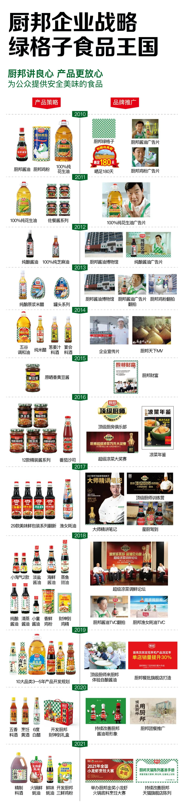
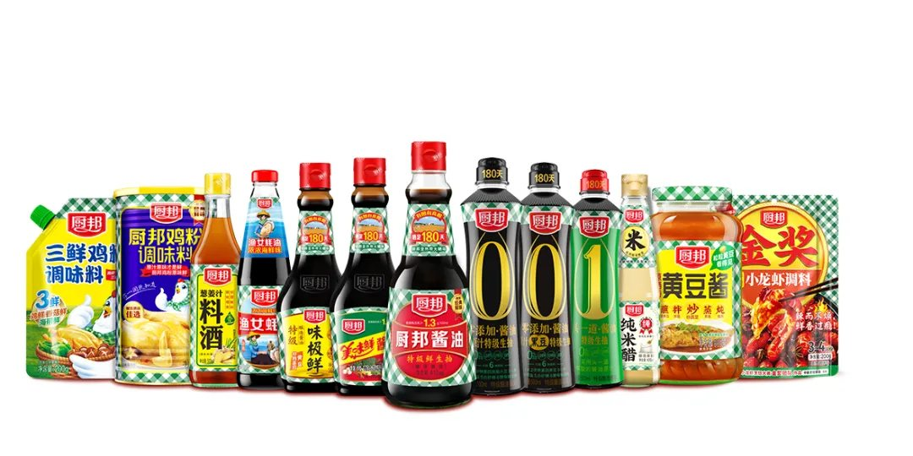
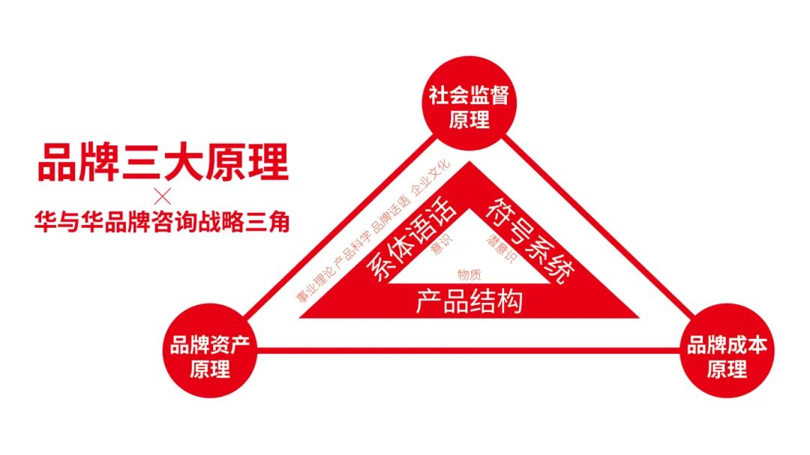
超级符号要解决的问题，是让一个新品牌，在一夜之间，成为亿万消费者熟悉的老朋友，帮助消费者迅速建立新的品牌偏好，并发动大规模购买。我是新的品牌，我要让人熟悉我，喜欢我，要做到这点我们就要嫁接消费者本来就熟悉，就喜欢的符号。厨邦的超级符号——绿格子，是从与厨邦有天然联系的文化符号、生活场景中而来的，绿格子是餐厅的符号、餐桌的符号、吃饭的符号、食欲的符号。餐桌布绿格子是什么？是原力，是公共符号、文化符号，是全世界每个人都熟悉的，餐厅的符号，吃饭的符号。我们将“绿格子”的原力、象征、感情，以及它的权力、指令，统统注入到厨邦品牌中，让“绿格子”成为厨邦的超级符号和品牌资产。符号设计要极致，用视觉符号激发触觉体验。餐桌布绿格子设计很简单，但是什么样的绿格子最美?什么样的绿格子才更贴近文化母体？这是个问题!这美的设计，不是一个简简单单的绿白色块，而是不同大小、粗细和间距要有不同比例。最好的符号就是最贴近文化母体的符号。在做这个绿格子的时候，我们还原了真实桌布上面细腻的花纹。你把桌布放大以后，你会看到上面有很多细腻的横线和竖线，然后再它上面又切分了更细的小块，我们让设计师们尽量地要做到还原桌布布纹的效果。绿上面还有浅绿，白上面也有一点浅灰，这样它看起来更像一个针织纹的餐桌布绿格子符号，用视觉激发触觉。
厨邦品牌谚语：一句话打动消费者购买厨邦是广东省中山市的酱油企业。广东的酱油工业十分发达，因为亚热带的光照时长和温暖气候，自古以来适宜晒制酱油。广东酱油的工艺，与中国北方以及日本的酱油工艺都不同。北方光照短和低温时间长，而广东省的南派酱油，完全是天然晒制，也保持了传统、天然的风味。广东人饮食清淡，但吃什么都爱蘸酱油，酱油让食材焕然一新，三杯鸡，第一杯就是酱油。
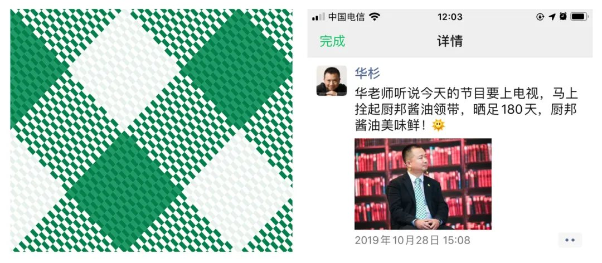
创意就来源于现场，从厨邦工厂老师傅的话里，从当地老百姓厨房的锅里，从茶餐厅食客的嘴里……华与华在市场调查中发现消费者对于酱油的“鲜”有强烈诉求。
▲消费者定性调研报告汇报 PPT 内页
“金品质，味生活”是厨邦原有的广告语。这是书面语，不是口语。书面语，是“视觉语言”，不是“听觉语言”，咱老百姓听到书面语，没反应！看到字，才知道是啥。而口语就不同，眼睛、耳朵、嘴巴都被用上了。品牌谚语，不仅要是口语，还要是“套话”。大多数广告语的毛病——搞“文学创作”。说没有意义的话，没有事实的话，没有行动要求的话。没有事实，没有行动，就没有结果。品牌谚语，不仅要口语，而且要“套话”。在口语文化里，已经获得的知识必须要经常重复，否则就会被人遗忘。口语套话更能被记住！口语套话能储存知识！并且要么用陈述句，陈述一个事实；要么用行动句，要求人行动。要有具体内容，事实是什么你就说什么，说一件事也行，不要什么事都没说。想要人买啥你就说买啥，不要什么要求也没提。“晒足 180 天，厨邦酱油美味鲜”，这是一个事实，这就是华与华方法中的品牌谚语。
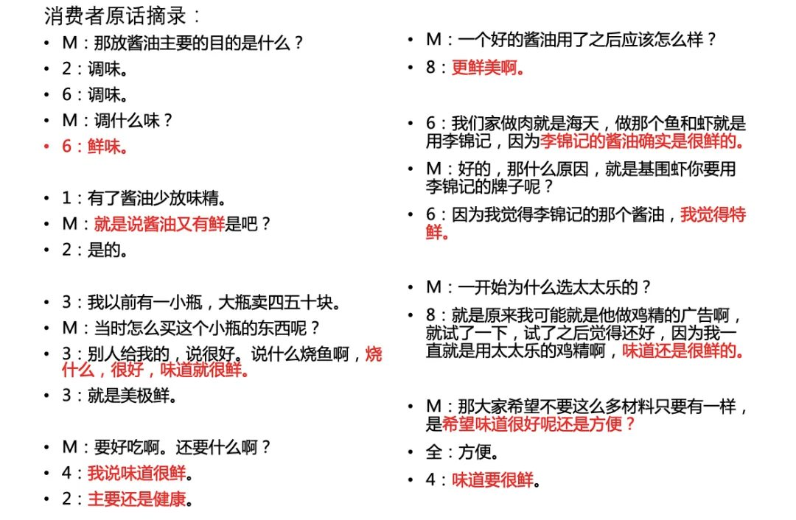
品牌超级话语的心理学就是——突破心理防线。没有心理防线，更能被人接受和信赖，华与华方法称之为“说话不设防”。在创作厨邦的品牌谚语过程中，反复读，反复喊，现在请你也大声读三遍，感受下我们在 2010 年的最终选择。
厨邦酱油，它的符号是餐桌布绿格子，它的咒语是“晒足 180 天，厨邦酱油美味鲜”，这“一符一咒”，就是它蕴含巨大传播能量的品牌信息压缩包。于是，酱油界跟风涌现出很多关于 180 天的传说。厨邦酱油超级包装：商品即信息，包装即媒体。包装就是产品，包装设计就是产品设计。要用产品开发思维设计包装。包装设计，就是产品再开发。
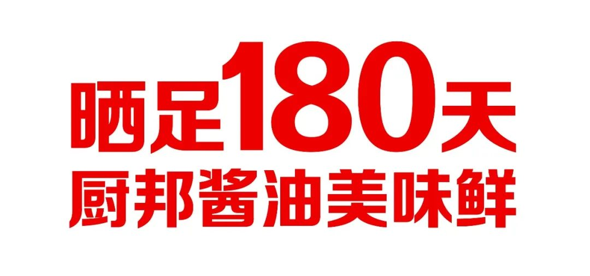
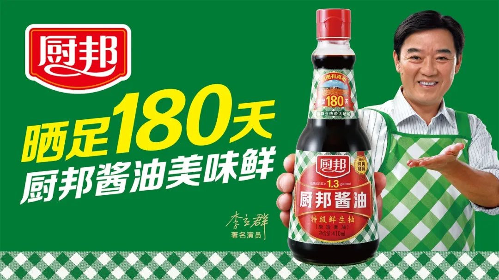
为什么说包装就是产品，因为这才是消费者的视角和语境，而包装是企业的视角和语境。消费者在商场逛的时候，他看到的不是一个个的包装，而是一个个的商品。产品是货架上的一个符号。首先不是在包装上如何突出信息，而是在货架上如何突出产品，所以要重视产品包装整体的符号性。厨邦酱油的包装设计，不是突出标志而是一个绿格子的整体包装，在货架上创造了鹤立鸡群的优势。人在超市里是怎么走呢？是在两排货架中间走。所以他不是正对着货架走，他的视线是45 °角斜着往前看。为什么说商场的端架很值钱，要花钱买陈列，因为端架是正对着看的。
厨邦酱油的包装设计，用绿格子包着一个圆柱形瓶子，陈列一排之后，就在 45 °角视线上连成一片绿格子，给人强大的视觉冲击力，把普通货架陈列做出了端架的效果。在陈列优势方面，厨邦的包装设计的一个细节， 45 °角集中陈列面。

好了，现在顾客走到我们的货架面前来了，这时候我们用什么迎接她呢？把包装当海报用，产品自己会说话。让产品自己会说话，让厨邦产品的包装在货架上自己把自己卖出去。根据购买者拿起产品之后的怎么看，指导我们将产品包装打造为一个超级推销员。人们的视线的流程是有规律的，这个流程是信息输入的过程，相应的是购买者做出决策的过程。最先看到的当然是瓶子中间的肚子，产品名称——厨邦酱油。在颈标上放上我们的酱油大晒场，写上“有图有真相，晒足 180 天！”
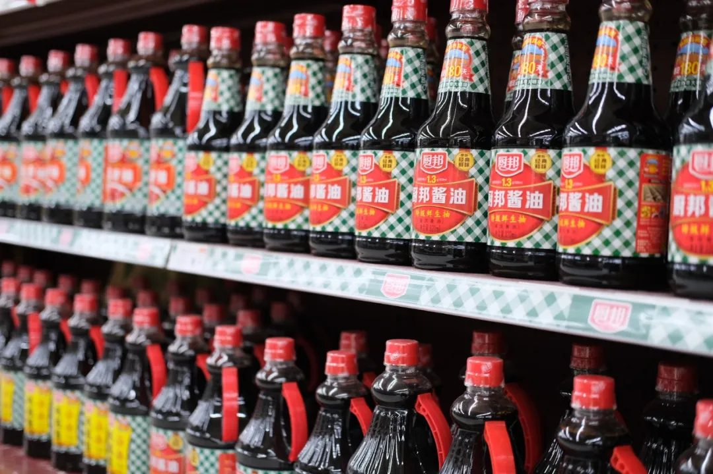
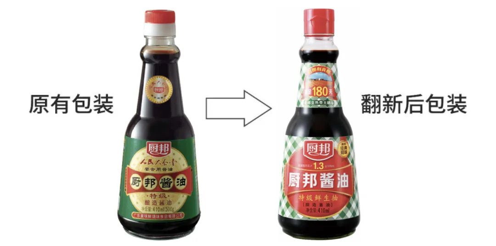
2016 年，在上海某超市走访，我们发现厨邦酱油品类少了点，忙着上货的厨邦业务主管解释：“超市不让我们厨邦几种酱油摆一起”，“为啥？”一米八的汉子腼腆地答道：“效果太好，那样顾客就看不到别家酱油了”。
不同颜色格子区分不同品类产品？厨邦食品的符号，不是厨邦的标志，而是餐桌布的绿格子。绿格子符号的识别度远远超过厨邦标志。绿格子是厨邦的品牌符号，是厨邦品牌形象的核心。华与华在设计厨邦食品格子符号的时候，曾有人提出用不同颜色的格子，比如酱油用绿色，醋用红色，食用油用蓝色等等诸如此类。理由是方便区分不同类别的产品。很多公司在设计品牌系统时也采用这种办法。这种提议忘了一个问题：为什么要区分？谁需要区分？我们产品的品类数会比赤橙黄绿青蓝紫的颜色更多，要多少颜色才够分？
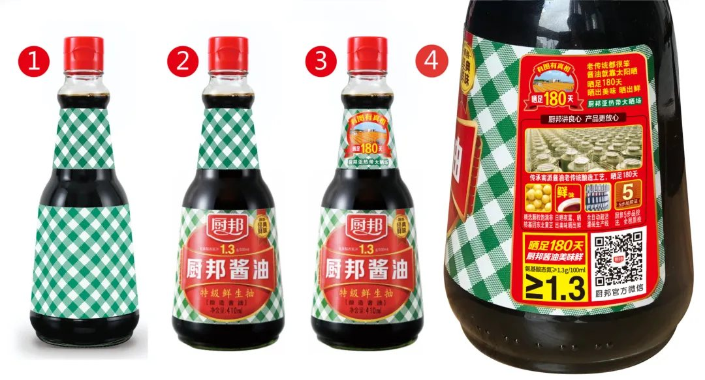
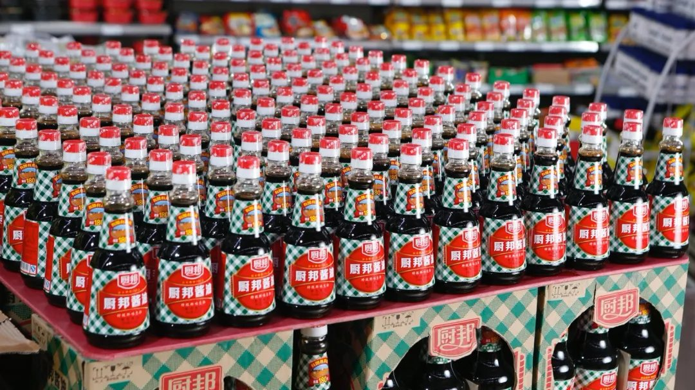
我们有数百个产品，但是在一个夫妻老婆店的货架上，能陈列我们几个？如果能放三个，阿弥陀佛，我们太成功了。那么如果就三个，我们还分了三个不同的颜色，我们如何能建立集中陈列优势？还有一个根本问题，消费者记得厨邦是什么颜色吗？品牌即言说，统一用绿格子，大家就都会说“那个绿格子的”，用多个不同的颜色，人家不知道怎么说，就没人说，就形成不了播传，就全得自己花钱去说，那传播成本就太大了。所以我们将全部、所有品类、规格、大小的包装，统一用一个绿格子形象，这奠定了厨邦超级品牌的基础。
厨邦电视广告扎金角，建立品牌资产（2010~2018）厨邦酱油是第一支拳头产品，为厨邦的下一个产品创造了一个品牌印象“老传统都很笨”，一个超级符号“绿格子”，一个超级话语“有图有真相，晒足 180 天，厨邦酱油美味鲜”。在传播推广时，我们需要一支电视广告片，为厨邦打下了扎实的“金角”建立起大规模的销售。电视广告不是“讲故事”，是“耍把戏”，是“产品演出”。电视广告是品牌的一场秀。要让产品成为英雄。我们不要“创意总监”，要“能用 15 秒钟让人掏钱，买他第一次听到的产品的人”。当我们的品牌拥有了相当的知名度，我们在任何一次创作的时候，仍然假设人们是第一次听说我们，这是我们的创作秘诀。华与华方法 15 秒电视广告的创作标准：1 ）让人记住品牌叫什么名字；2 ）让人记住商品长什么样子；3 ）给人购买理由和冲动；4 ）建立品牌符号和企业战略优势。注意这四条，前两条是最低要求，其中第一条是前提，后两条是最高要求。 15 秒钟，这四条要全部做到，这就是标准。
重复，是建立品牌资产的“天条”。什么叫重复，重复就是主旋律。维特根斯坦说：“一首乐章的主旋律，就是反复、重复的那一部分。”品牌资产，就是人们所熟悉的“品牌的旋律”，不断重复地“旋律”。从厨邦酱油广告中，我们可以看到，从第一个镜头，到最后一个镜头，你都能够看到“绿格子”的身影。不仅在包装上、最后一个镜头的尾板上，我们还让李老师穿上了绿格子围裙。甚至在厨邦酱油的晒罐上，包上了绿格子，还让它动起来，从晒罐上飞到了酱油瓶上！厨邦酱油的超级符号“绿格子”和超级口号“晒足 180 天，厨邦酱油美味鲜”，已经成为华与华“超级符号就是超级创意”的代表案例。品牌代言人是产品推销员，突破消费者心理防线。厨邦酱油的广告片，代言人用了台湾的老戏骨李立群老师。第一次请李立群，是三精制药董事长姜林奎要求请的，他拿几条李立群的广告片给华板看，有金门高粱酒的，有柯尼卡胶卷的，他说，把这个演员找来，他太能感染人了！看了他的广告，他那种实诚劲儿，那种热情，那种对产品的那种溢于言表的热爱和自豪，真是让观众毫无心理防线。三精制药请了李立群，给我们拍摄了一系列的广告片，都非常好。后来在做厨邦酱油的时候，我们第一个就想到了李立群。
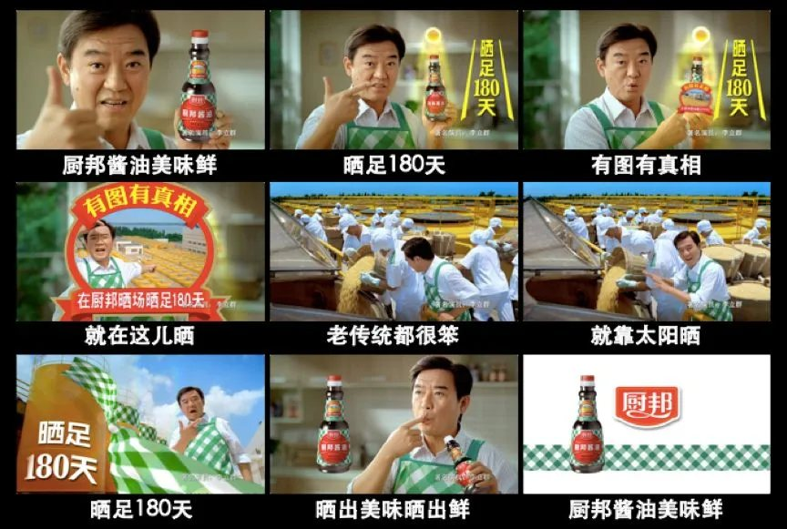
心理防线，是广告创作时刻要考虑的，前面我们说要用顺口溜，因为俗语不设防，你押韵了，心理防线就解除了。同样，在演员的选择上，也要选择那些热情的，有亲和力的，有销售天赋的，因为代言人就是你的销售员啊！所以我们要明确，品牌代言人是产品推销员，他的任务是来推销的，他是配角，不能是主角，这一点是必须意识清醒的。所以我们选择代言人，不是看谁最大牌，而是看谁是最佳广告推销员。在 2022 年疫情期间，李立群老师拍摄居家日常，还不忘为厨邦带货。
10 年 3 部广告片，坚持核心创意不动摇。讲持续改善时说的八个字：知行合一，凡事彻底！凡事彻底，重复做一件事，就是把平凡的事做彻底，做到不平凡。厨邦酱油电视广告在过去 12 年内， 3 次翻拍持续改善，每年都只是在做微调而已，并没有做大的动作。围绕厨邦核心品牌资产，不断增加创意细节。厨邦从地方品牌开始做起，投放广告规模远远比不上全国性竞品，但是我们的广告却红遍大江南北，甚至在 b 站上被网友自发加工传播。这背后呢，还是华与华的人生哲学，两个字——积累！都是在年复一年的过程中，不断生发出来的。德鲁克说：“人们总是高估了一年所能取得的成绩，而大大低估了三十年、五十年所能取得的成绩。”这句话太深刻了！
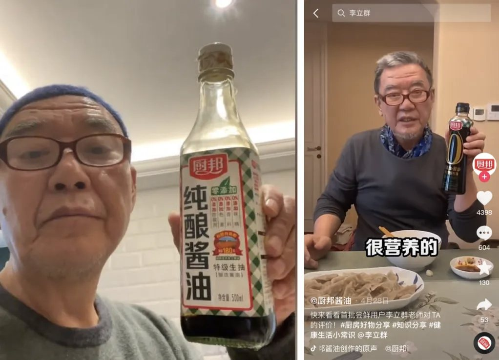
成功关键靠决策。 12 年前，华与华第一次给厨邦酱油提案的时候，公司绝大多数人觉得过于冒险。但是厨邦当时的董事长张卫华先生，力排众议，他没有左顾右盼，逡巡犹疑去看，而是直观地去看，直觉地去看，本质地去看，心无旁骛不受干扰地去看，他顶住所有人的劝阻，拍板了。在短短一个月内，将绿格子铺到“产品、渠道、终端”的各个媒体上和企业工厂上。厨邦的工厂，也就成了“绿格子”工厂！从今天看，他的这个判断英明无比。这是华与华的福气。
厨邦财富训练营，领导经销商的思想，做强渠道品牌厨邦是一个强渠道驱动型的品牌，在早前每年就会开两次经销商会议，培训经销商能力，加强经销商的管理。在 2010 年，我们建议厨邦要系统性加强经销商的培训教育。
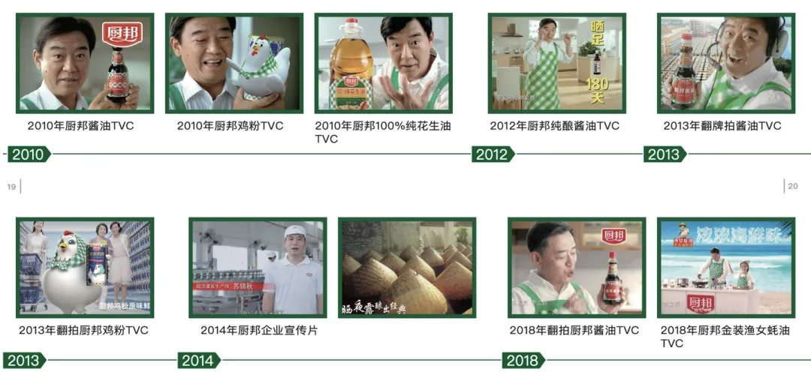
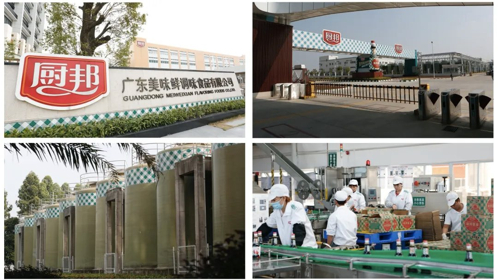
提升经销商发展的能力，让经销商发财，厨邦才会更好地成长。那如何建立经销商的培训教育体系呢？当时我们提出以厨邦一年两次的经销商会议为节点，设立“厨邦财富训练营”。面向全体经销商举办训练营，每年定期的经销商会议同时组织为经销商培训，逐步让经销商对厨邦形成依赖。渗透到全国渠道网络中，有组织、有计划、分区域对经销商培训。同时，我们还开发了财富训练营工具——《厨邦财富》内刊。从思想上领导经销商，改造经销商思维。企业定期发行《厨邦财富》刊物，提供先进的销售理念、调味料市场资讯等内容。
我们所做的这一切，积累下来,就能够获得经销商的认同和忠诚，这是竞争对手无法复制和拷贝的核心价值！在 2010 年为厨邦设立了渠道管理的策略和思想后，厨邦以强大的执行力一直执行至今，并且在每年的基础上不断持续改善，作为公司层面的管理内刊，从理念、动作到经营管理，提升经销商经营管理和营销的实力，成为厨邦管理培训经销商的重要经营活动。在华与华为客户服务的第一年，我们开始绘制品牌三角两翼， 12 年持续构建厨邦绿格子王国。构建品牌的三角形，不是一年的事情，也不是十二年的事情，是品牌终身的事业。在华与华为厨邦服务的 12 年里，持续构建丰富品牌符号、话语和产品体系。12 年形成了 11 大品类，超 50 亿的产品结构，积累出“绿格子”、“有图有真相”、“晒足180 天”等一系列脍炙人口的品牌品牌符号体系。梳理出从品牌谚语、事业理论、到产品科学一系列的品牌话语体系。
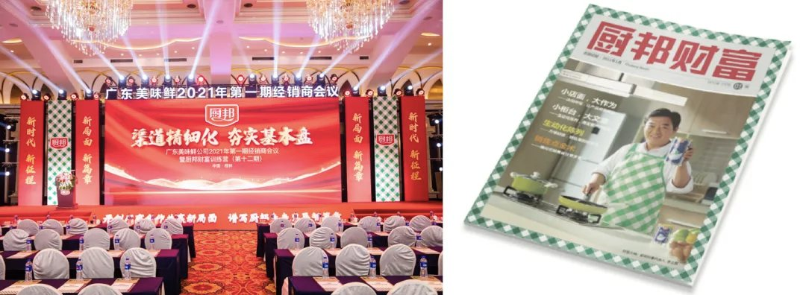
厨邦包装极致开发：一个包装设计价值一个亿
快消品最大的元媒体是产品包装和货架，放上货架就开卖设计一个产品包装，就是建一个企业的品牌基站，品牌基站的信号覆盖范围决定品牌能见度。信号越强，则能见度越高，这个基站就是品牌最大的元媒体。包装是消费品品牌的战略工具和最大元媒体。元媒体解决销售转化问题。我们开发媒体通过对刺激信号的编码与解码，使包装的能量信号快速高效地触达消费者，从而提升转化率。快消品包装设计，不是“包装设计公司”的工作，或者说，这世界上根本就不应该有“包装设计公司”。除非，这个包装设计公司，是一个全案公司，他懂得一切，因为包装设计里面，包含了品牌策划工作的一切，除非他把这一切全都做了。否则，单独进行包装设计工作，从理论上就不成立。而如果他把一切工作都做了，他就不是一个包装设计公司，也不会按包装设计来收费。这又是一个哲学问题——每一个局部，都包含了全体，而不是所有的局部加起来组成全体。
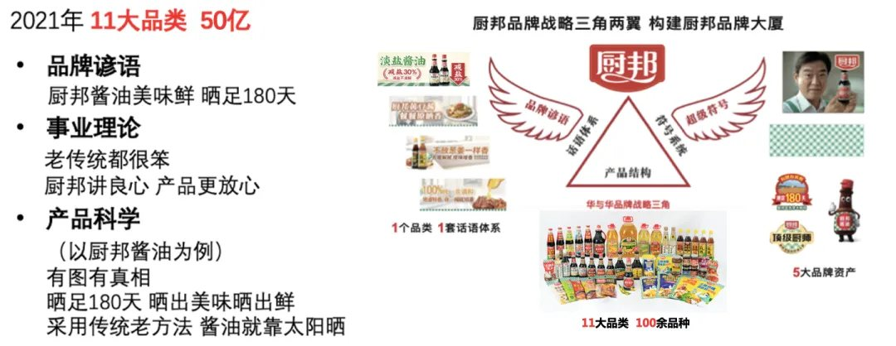
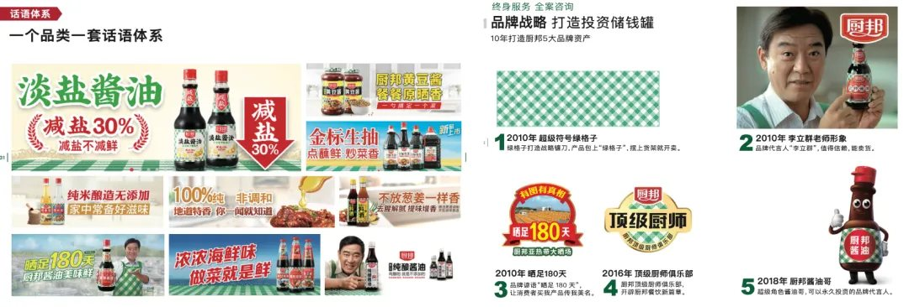
掌握关键放大技术，厨邦料酒脱颖而出2014 年，料酒还是一个很小的品类市场。厨邦看到了品类未来发展的趋势，决定开发料酒产品。成功就是时间现象， 2014 年华与华对料酒产品进行开发，经过 4 年的持续高速发展，料酒品类已经成为厨邦过亿的明星品类。在 2014 年我们对厨邦的料酒产品进行再开发。在当时，料酒相比酱油、醋来说，还是一个小品类，有产品需求意识以及品牌意识的家庭才会购买。所以在终端料酒的放置的位置就会很差。并且很多料酒产品包装，料酒品类实际上标得很不清楚，料酒这两个字都很小，别的信息比如葱姜放得很大。经常一大堆产品堆在一起。消费者去超市的时候要到处找，不像酱油醋迎面就向你扑过来了。
基于这样的观察，我们就思考，怎么样让厨邦的料酒产品在这个柜台上脱颖而出。掌握关键放大技术，让厨邦料酒脱颖而出。首先，我们给料酒产品命名：葱姜汁料酒。给出明确的购买理由“不放葱姜一样香”，只要放上这料酒也一样香。其次关键就是把料酒量两个字放得足够大，能放多大放多大。放大以后摆到料酒柜台那，因为消费者本来就是在找料酒，他到了柜台，第一个蹦到他眼睛里面的就是包装上
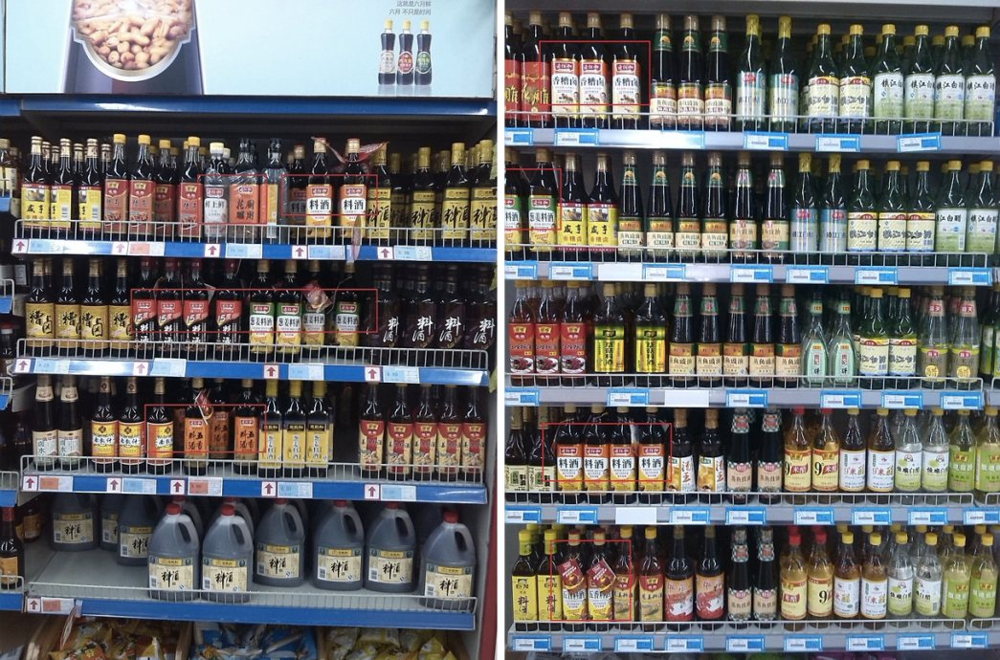
写的料酒这两个字，看到我们的概率会提高，被拿起的概率也会提高。我们用黄底黑字，来凸显我们的货架优势，既有食欲又十分明显。
2016 年，开发厨邦中高端年份料酒。
2020 年厨邦横向延伸，做细分功能料酒产品开发，年份料酒包装翻新，放大小品类产品价值。
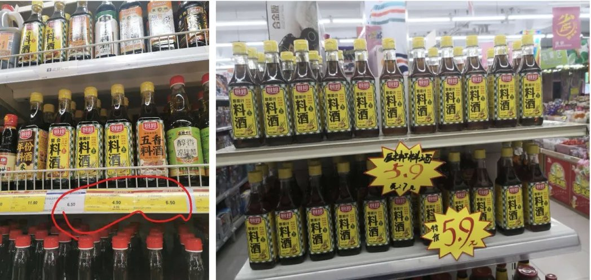
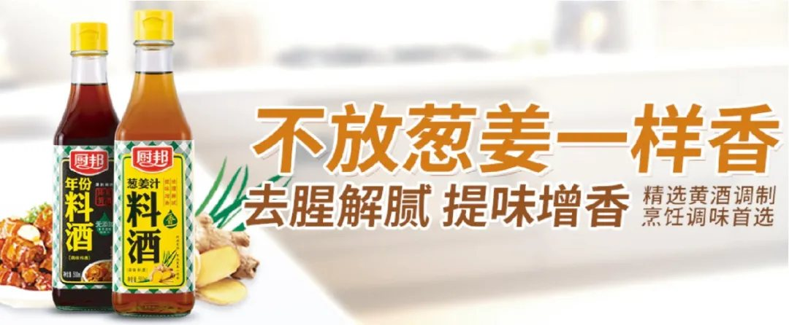
抢占海鲜味，建立品种价值。2017 年厨邦蚝油生产技术突破，产品的口感有很大提升。借此机会需要重新梳理蚝油产品结构，扩充产品线。我们发现竞争品牌都在打“一招定鲜”、“传统秘方”等卖点，依然在强调蚝油的品类价值，没有真正建立品种价值。而我们发现，由于厨邦的技术进步，生产的蚝油是有海鲜味的蚝油。并且从消费者的原话来看“海鲜味”则是广大消费者已经充分认知并且广泛使用的口头语。所以厨邦蚝油抢占“海鲜味”，建立品种价值，厨邦蚝油就等于海鲜味！创意厨邦蚝油口号：“浓浓海鲜味，做菜就是鲜”用此口号统一厨邦蚝油及厨邦渔女蚝油口号。同时翻新厨邦蚝油及渔女蚝油产品包装，全新开发“瓶颈广告位”。这是除瓶身包装外的二门头，第二个媒体广告位。我们把这个媒体广告位放到最大，提升产品的陈列优势。厨邦渔女蚝油 2017 年 5 月上市，一经推出快速增长。蚝油品类 17 年开始到 2020 年，每年都保持 30 %~ 40 %超高增速。蚝油从几千万发展到超过 3 亿的超级品类，成为厨邦明星产品，打造厨邦全新增长极。
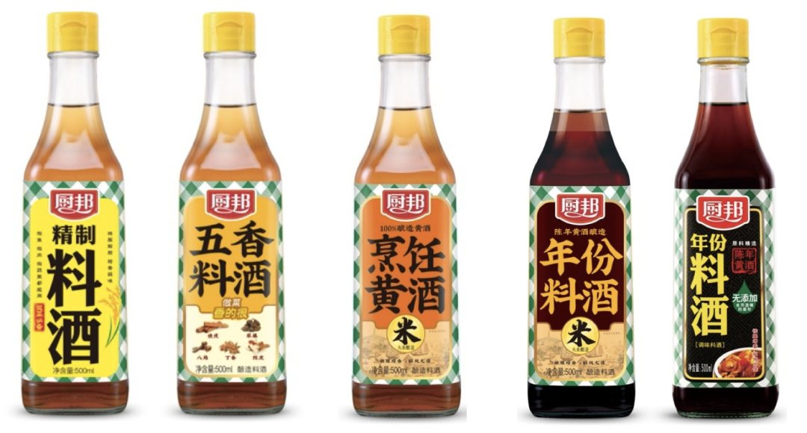
2020 ~ 2021 年推出细分品类蚝油，炒菜鲜蚝油、鲜味蚝油，进一步拓展蚝油产品线。
持续改善12年：获取管理红利
2015 年开始，华与华请了日本管理顾问——尚和管理咨询公司，来给我们做咨询。每个月来华与华辅导我们学习丰田生产方式，至今已经持续五六年了。今天如果你走进华与华的办公室，就像走进丰田汽车的生产车间一样，墙上全是生产管理看板。华与华能做到今天的品质和规模，主要是靠这套生产管理方式。
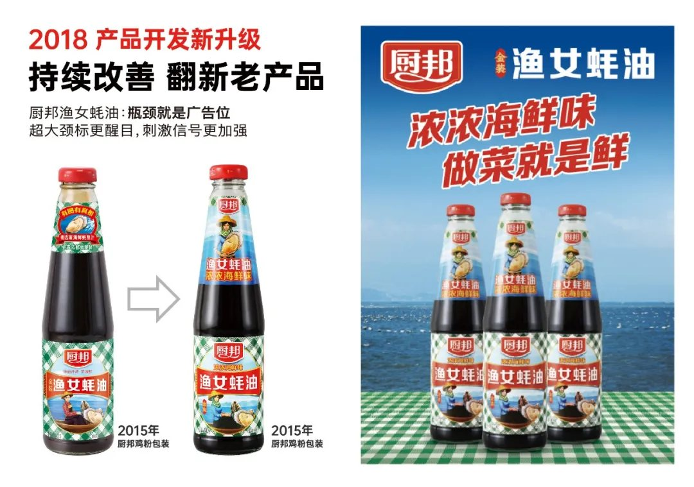
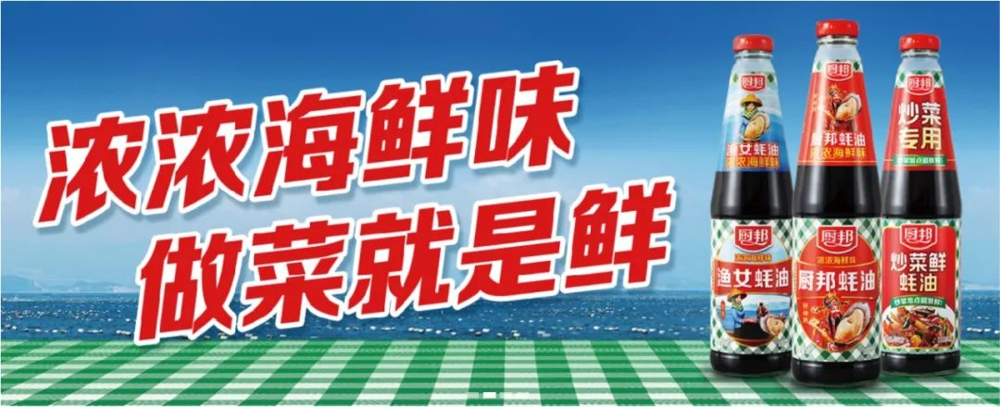
而华与华和尚和管理咨询公司的结缘，正是来自厨邦。 2014 年，华板去参加厨邦酱油阳西新厂的落成典礼，遇到了厨邦的 TPS 顾问，尚和管理咨询的桥本正喜和胡光书老师。时任厨邦董事长的张卫华先生向华板介绍说，桥本老师和胡老师辅导了他们最大的酱油瓶供应商——华兴玻璃，而且合作持续很多年了，现在，也给厨邦食品做 TPS 管理辅导。晚宴时，华板就提出请他们给华与华做辅导。桥本老师说：“我是咨询公司，你也是咨询公司，你为什么还要请我做咨询呢？”华板回答说：“咨询公司也要请咨询公司咨询咨询！我有‘两个不可理喻论’，一是广告公司不打广告，不可理喻；二是咨询公司不请咨询，不可理喻。为什么呢？因为广告公司最懂得广告的价值，所以他一定会给自己打广告，如果他不打，证明他不相信自己的广告有效果；同样，咨询公司最懂得咨询的价值，而他只是某一方面的咨询专家，在其他方面，他就会请别的咨询公司，如果他不请，证明他不相信咨询有价值。以后您就了解了。”就这样，我们达成了合作。在华与华学习丰田生产方式的过程中，也将 TPS 的精髓“持续改善”的技术打造成我们为客户服务的产品，深入客户的经营终端，改善门店、包装、渠道的转化效率，帮助多个项目取得巨大成果。我们与厨邦学习同一种管理方式，又通过学习丰田管理方式的成果再给厨邦提供管理咨询的服务。而在给厨邦服务的 12 年中，华与华在 4 大终端提供持续改善服务，提升转化效率，获取管理红利。1 ） 11 大品类包装持续翻新（ 2011 ~ 2021 ）2 ）终端物料持续改善（ 2013 ）3 ）餐饮批发渠道持续改善（ 2019 ）4 ）天猫旗舰店持续改善（ 2021 ）
厨邦酱油包装，持续改善就是一次比一次做得更好（2011~2021年）华与华的管理顾问，桥本正喜老师说：“重复做同样的动作，每一次做，都比上一次做得更好，并且能说出来好在哪里，这就是持续改善。”厨邦酱油如今的包装，其实也不是一下子就设计出来的，我们也是经历了 8 年的持续改善。目的就是为了放大超级口号的能量，积累超级口号品牌资产，这个就是华杉说的“机关算尽”。 8 年 5 次改善，怎么让这瓶酱油越来越好卖。
① 是厨邦原包装。② 我们包上了绿格子，获得了终端陈列的绝对优势，并且把颈标放大，又重复一遍品牌名称。③ 把瓶颈的广告位，放上了厨邦酱油大晒场！④ 瓶身部分去掉了“厨邦酱油”产品名的白圈，改变字体、放大加粗，在终端更容易被发现；我们在颈标上直接强化了超级口号“晒足 180 天”，并且把 180 再放大，变得更醒目，瓶身这里厨邦酱油字体再放大，产品名上方的“晒出美味晒鲜”和产品名下方的“特级鲜味生抽”放大，降低沟通成本。⑤ 在颈标面积不变大的情况下，再一步放大“晒足 180 天”的超级口号，大家看下，其实和左边这个颈标，图片缩小了一点，但是口号变大了，总面积却没变，这个叫什么，叫无所不用其极。然后再进一步再放大产品名称下面的“特级鲜味生抽”。⑥ 现在消费者，其实是越来越懂一些专业知识，很多人知道酱油的品质，就是以氨基酸态氮含量作为评测标准的，到了第六版，我们直接就把他们关心的“氨基酸态氮含量≥ 1 . 3g / 100ml ”放到正面标签，并且非常醒目地突出了“ 1 . 3 ”。厨邦 LOGO 旁边，增加“原创经典鲜味”。这就是前面提到的机关算尽，每一个上面都有小机关，一旦你被这些小机关触动了，你就拿起来，直接滑向收银台。
11大品类包装持续翻新（2011~2021年）不仅为厨邦酱油的包装进行改善翻新，在 12 年内，我们每年根据市场反馈为厨邦全品类产品进行翻新。我们不断的通过字体变得更清晰，字号变得更大来获得陈列优势，传
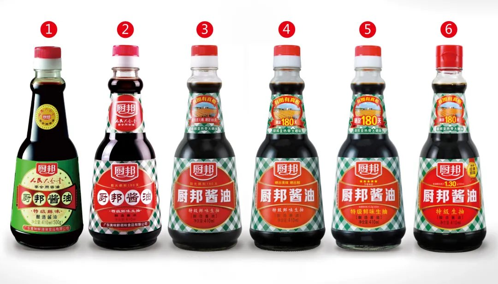
达超级口号，吸引消费者看到我们、购买我们。
脚踏实地做终端——厨邦终端生动化方案2013 年，我们在观察客户线下终端物料的时候发现，品牌元素使用不规范、格子大小不统一、可使用的物料单一、插板和价格贴以及物料执行和维护不到位、海报没有平整地贴好、没有及时维护。
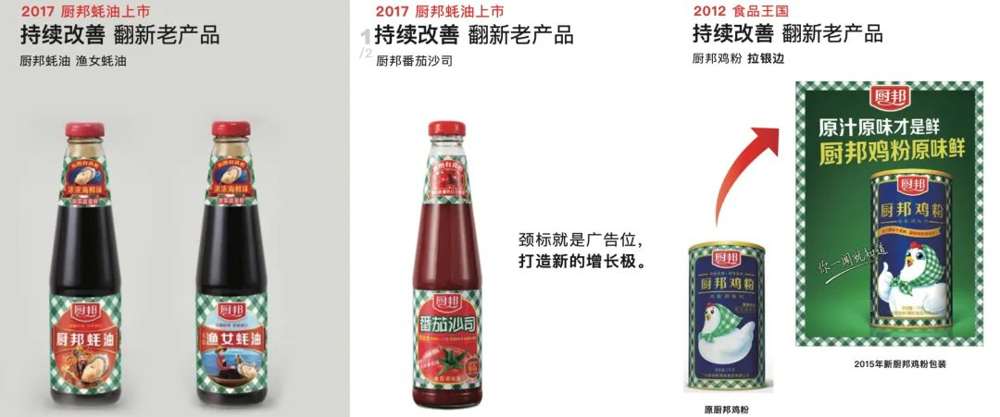
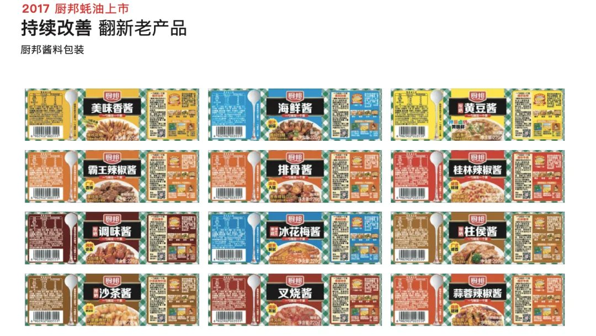
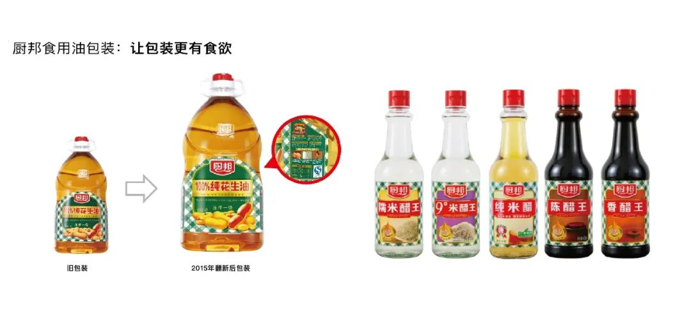
课题对策：打造统一的、标准的厨邦终端形象，高效积累品牌资产：1 ）通过超级符号，占领一种颜色。2 ）超级符号超级物料：胶带随处贴。
3 ）全面媒体化物料：跳跳卡、雨伞、门头。4 ）特殊陈列道具：端架包柱。5 ）基准化手册：业务员实战手册和品牌生动化手册。
厨邦餐批门店持续改善，单店销量提升30%2019 年，厨邦相较于竞争品牌，发展短板在餐饮渠道，发展潜力也在餐饮渠道。由此需要打造 1200 家可复制的厨邦餐批旗舰店。调研问题：目前餐批门店存在的问题存在问题：1 ）门店形象无特点，不能及早被发现，不能吸引人进店；2 ）厨邦货架不显眼；
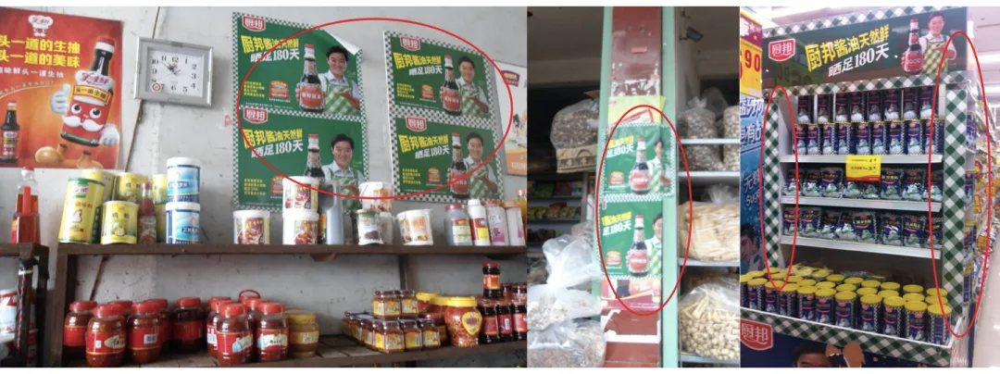
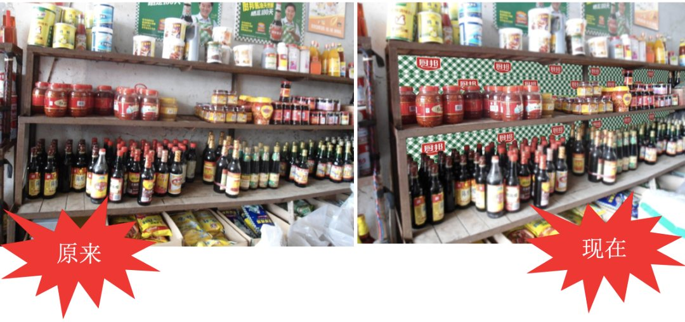
3 ）产品陈列杂乱。针对现有的问题，制定可复制的解决方案。明确课题：提高货架发现率和产品浏览率，最终提高厨邦产品销量。设定打造的关键动作：1 ）门店导视及全媒体化提升发现率和进店率；2 ）打造有销售力的餐批专项货架；3 ）打造门店内厨邦陈列销售专区；4 ）打造有销售力的割箱堆头。改善方案：1 ）店外引流 2 件套，吸引消费者发现门店，提升进店率。2 ）货架助销 5 件套，提升货架发现率和产品浏览率，最终提升厨邦产品的销量。3 ）店内氛围 4 件套，打造店内厨邦销售氛围。
厨邦餐批门店打造，带来 3 大效果：1 ）不管新店、老店都可提升销量；2 ）门店能够多进货、进新货；3 ）增进客情，老板愿意多推荐。改善后路遥味业三天共有 11073 人经过门口，发现门店 3718 人，进店 1033 人，发现货架 915 人，查看货架 768 人；门店发现率同比提升 81 . 6 %；进店率同比提升 24 . 8 %；货架发现率同比提升 334 . 6 %；浏览率同比提升 315 . 4 %。改善后更多的人发现了门店，进店率是改善前的 1 . 2 倍，货架的查看率是改善前的 3 . 2倍。对比发现改善后的销售额提升了 40 . 3 %，多卖了 1608 元，是改善前的 1 . 4 倍。基准化：制定《厨邦餐批门店打造执行手册》，在其他市场进行复制，并推广全国，让厨邦产品在餐饮渠道快速上量！
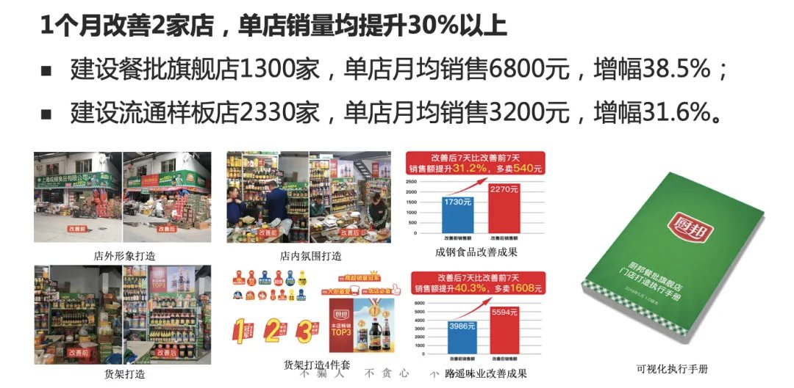
按照《厨邦餐批门店打造执行手册》， 0 基础沟通，就能让业务员看了 100 %复原。 2 个人 2 次就能实现店外物料持续改善，让门头物料 100 %可落地。在其他市场进行复制，并推广全国，让厨邦产品在餐饮渠道快速上量！
厨邦天猫旗舰店持续改善，下单转化率提高154%2021 年厨邦重点开拓电商渠道，华与华用持续改善的技术提升线上各个环节转化效率，最终提升线上销量。针对线上顾客旅程转化关键节点进行改善，促成购买转化。
提高线上终端的转化率，最终实现产品销量的增长改善前后效果对比；改善产品金品生抽点击率提升 30 . 2 %， 2 款改善标的的平均停留时长提升 35 . 01 %、 26 . 50 %；下单转化率同比提高 154 . 99 %、 82 . 83 %。
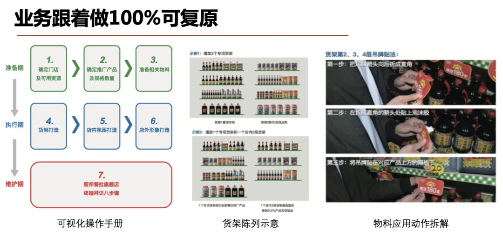
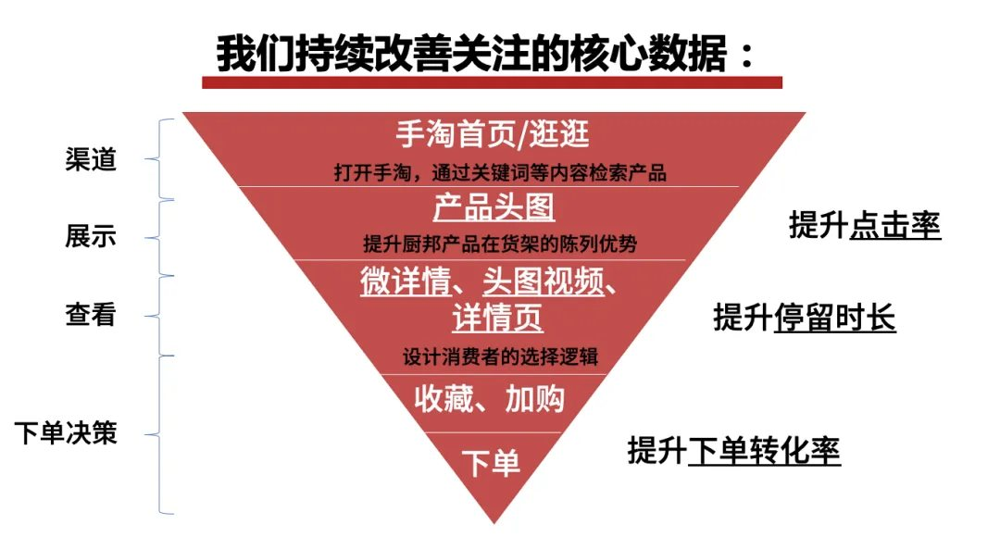
形成线上陈列设计基准，指导电商公司多平台进行复制执行。建立厨邦电商陈列作业标准，将工作经验转化为共享知识，方便后续电商公司进行多平台复制，帮助客户用好代运营公司；提案过后，厨邦 100 %全面实行。全面落地后， 2021 年，厨邦天猫年货节预热金额转化，同比增长 47 . 62 %，并逐步统一全线上平台。
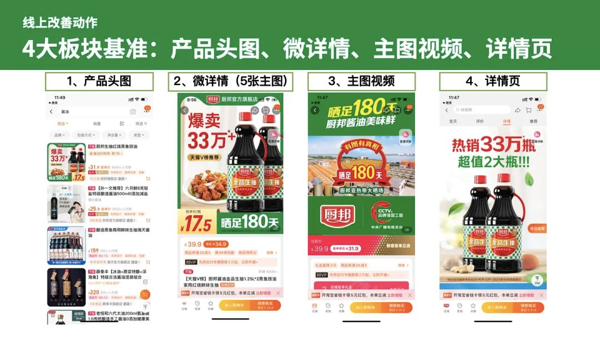
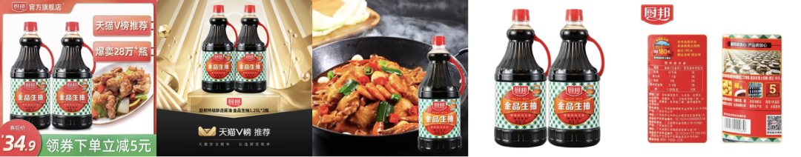
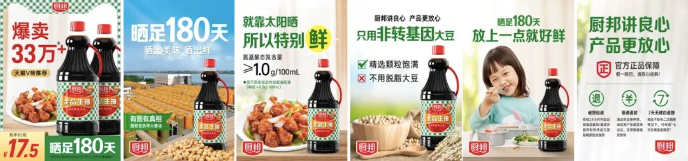
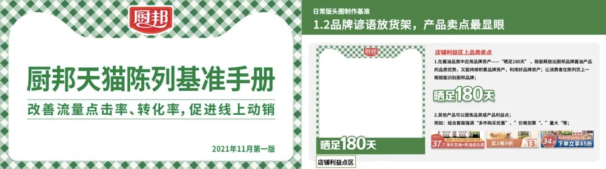
打造营销日历，开拓餐饮渠道
营销日历是华与华提出来的重要观念，就是把企业的行销活动，不管是公关活动还是促销活动，都固定下来，长期、或者说永远重复做同样的事。这样固定下来，有什么好处呢?两个好处：成本和投资——华与华方法的每一句话，都是从这两个方面出发，成本和投资，降低成本，形成资产。营销日历和品牌生物钟，就是给品牌形成固定的营销节拍和主题，重复积累，把营销活动也做成品牌资产，形成品牌生物钟，是在内部形成所有员工一年的工作节拍，自动重复，精益求精；在外部呢，则是在顾客脑海里形成消费生物钟，到时间他就来。而我们也用华与华方法，为厨邦餐饮渠道开发营销日历，从 2013 年起，开始和厨邦共同推进，经过 8 年时间的不断改善推进，帮助厨邦从 0 到 1 开拓餐饮渠道。 2021 年厨邦餐饮渠道的市场销量占厨邦整体销量近 30 %，至今西贝、蜀海供应链、全聚德、莆田餐厅、客语、味千拉面、丰泽园、外婆家等均使用厨邦品牌。
抓住餐饮渠道核心群体，积累厨师资源
厨邦原先的市场偏重大流通和批发渠道，也没有专门针对餐饮渠道的产品。在合作第三年，厨邦与华与华开始探讨如何开拓餐饮渠道。
洞察：厨师是进入餐饮渠道的主要决策者
调研发现，餐饮渠道与大流通渠道不同，总厨会根据成本和预算确定品牌采购，而且厨师对品牌忠诚度较高。要开拓餐饮市场，品牌供应商需要长期联系和服务厨师群体。厨邦此前没有积累厨师资源，因此提出围绕厨师群体制定六大营销方式。
在提出后的第一年，厨邦从顶级厨师峰会开始入手，建立起厨邦餐饮市场开拓的起手式，打造一个厨师交流会，后来改成“厨邦顶级厨师交流会”。
聚焦凉菜，开办大赛在 2013 年提出聚焦厨师，以顶级厨师交流会开拓餐饮渠道后，厨师市场的开拓速度仍然很慢。因为聚焦厨师资源的活动，同行业竞品已经深耕多年，举办大赛、开办交流会、开设俱乐部都已经做得十分成熟。同时厨师资源也是有限的，一旦维护住便很难再撬动。于是，华与华和厨邦仍在共同研究如何更高效快速开拓餐饮渠道。2015 年，总经理肖征和厨邦张总一起走福建市场的时候，讨论要给我们的厨邦的厨师活动找一个更好的切入点。基于我们对于服务餐饮客户的理解，就想到是不是可以用凉菜作为切入点开拓餐饮市场。酱油好不好，凉菜最知道！我们发现，凉菜在餐饮体系中的特殊地位。凉菜是消费者接触的第一道菜，对于餐厅来说，凉菜的毛利润更高，同时可以大量备货。而厨邦酱油在凉菜的调味上又有酱香浓郁、上色天然、鲜咸适中的产品优势。
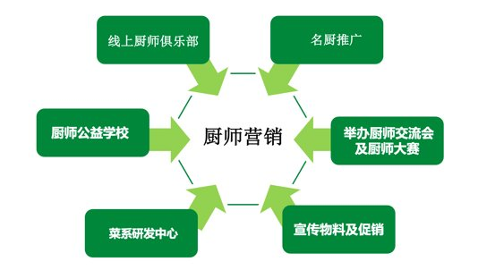
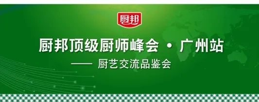
我们就决定抓凉菜这个点切入市场，用这个来吸引厨师，来提高我们在厨师心目当中的地位。
于是我们提出策略：把餐饮渠道当产品开发。并启动“ 3 个 1 ”工程： 1 个厨师俱乐部、 1场厨师盛会、 1 本专业杂志。1 个俱乐部：顶级厨师俱乐部和厨师 IP打造厨邦顶级厨师俱乐部的平台，成为活动发起组织平台、权威发布信息平台、厨师联盟交流平台、游学切磋学习平台。以顶级厨师俱乐部为平台，不断积累厨师资源。
1 场厨师盛会：厨邦凉菜大赛如何把现在我们开的厨师会议，效率翻倍？如何切入这个被竞品已经开拓很深的厨师市场？
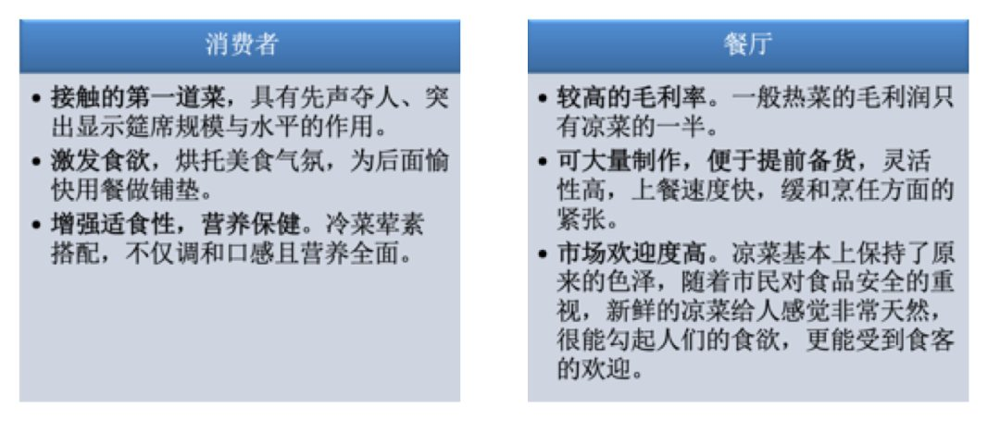
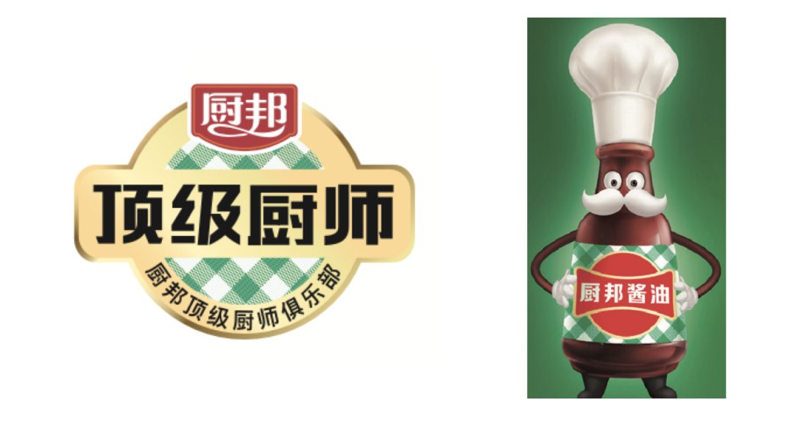
我们聚焦凉菜，打造厨师业内凉菜大奖： 5 万现金，只奖凉菜。让赛事成为盛世，让厨师成为英雄，让厨邦产品成为超级凉菜的亮点，让我们的餐饮渠道会议成为厨邦和凉菜的主场。
通过该赛事的常年积累，巩固厨邦产品在凉菜界的霸主地位，从而增强厨师及餐厅对厨邦品牌的黏性，帮助经销商更易开拓餐饮渠道。1 本杂志：《凉菜年鉴》常年积累厨邦资源，巩固厨邦产品在凉菜界的霸主地位。我们做一本杂志，让厨师替我们传。
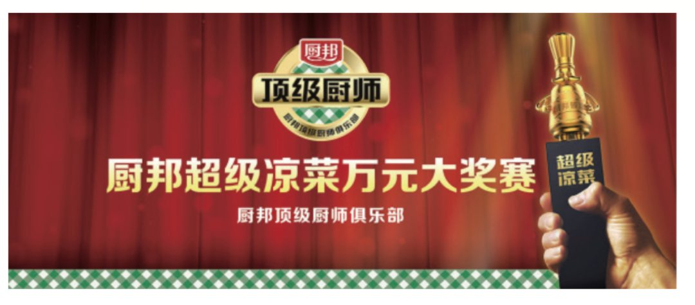
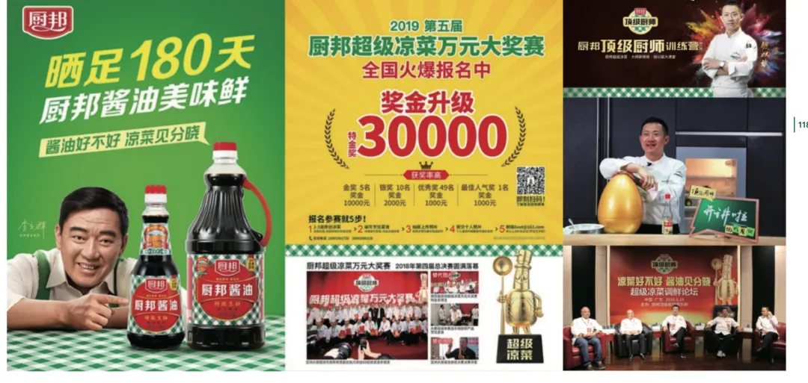
2017 年，厨邦顶级厨师——开设顶级厨师训练营产品，培育厨师群体同时开发顶级厨师俱乐部培训产品，聚焦大师资源，为厨师群体开设训练营。通过菜式的培训，不断建立和培养厨师群体对厨邦产品的认知。一年五场，将大师讲课形成大师精讲笔记，分发给厨师进行学习。
2021 年，厨邦顶级厨师——开设顶级厨师大师私房课，培训产品背靠餐饮大师资源，开设大师私房课培训产品，依托大师资源培养厨师同门师兄对厨邦的认知和使用习惯。
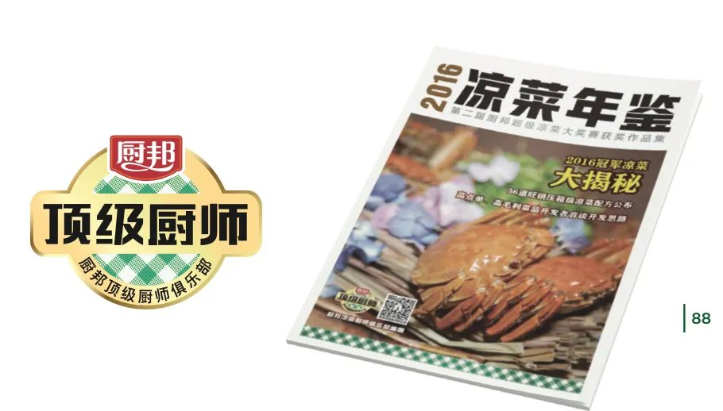
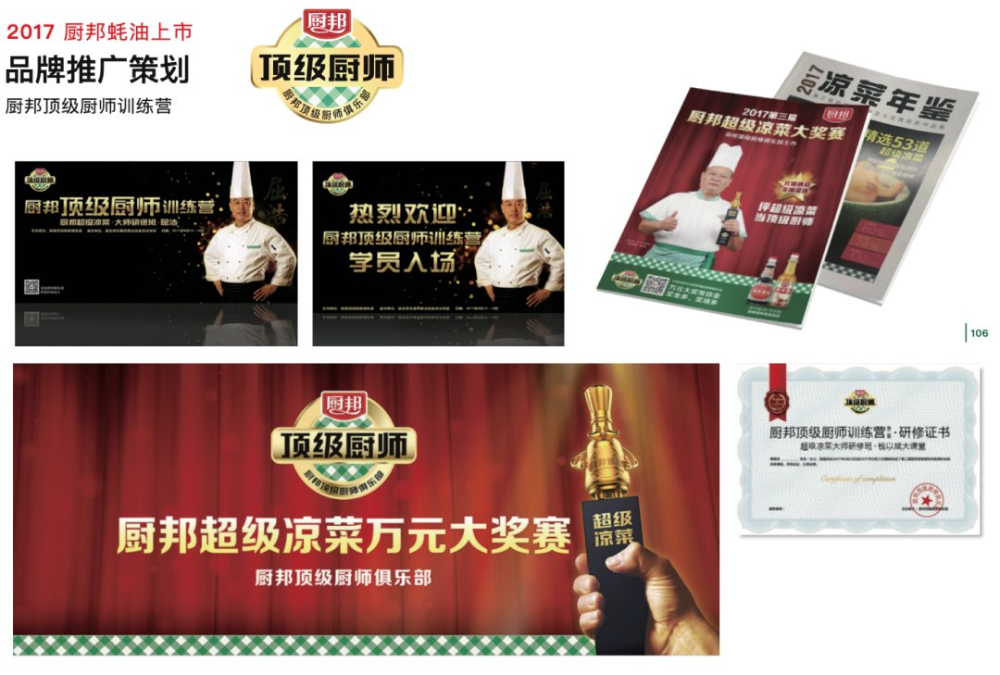
我们要做的是不断地形成新的经验，而不是每年都要换新的事来做。在这样不断地磨炼里，用成功消化失败，在过程当中进行复盘和改善，你就能够越做越精。至今，厨邦餐饮渠道已形成一赛（凉菜大赛）、一营（训练营）、多会（交流会、品鉴会、茶话会）的组合配置。超级凉菜万元大奖赛至今连续举办 6 届，在餐饮界有较高影响力。2018 年 5 月与东方美食合作在国家会议中心盛大举行了第四届厨邦超级凉菜万元大奖赛，共有来自全国 60 余位大厨同台竞技，并且有诸多大师评委进行评判，在餐饮界造成轰动。同时厨邦凉菜大赛、顶级厨师俱乐部已经成为厨邦的品牌资产，每年厨师群体对他有期待，而且有美好的回忆，成为厨师人生的一部分。
多品类产品齐爆发，构建厨邦绿格子食品王国
产品战略涉及三大课题：产品结构、每一支产品扮演的战略角色和承担的战略任务、推出的战略次序。产品结构流量呢，就是产品和产品之间互为流量入口，每一个产品都能促进其他产品的销售，每一支产品都为彼此带来流量。华与华服务厨邦的 12 年时间，帮助厨邦围绕华与华围棋模型规划产品战略及进行新产品开发创意，同时管理产品结构流量。 12 年时间，打造超 50 亿厨邦绿格子食品王国，助力厨邦实现从 2 大过亿品类到 7 大过亿品类。
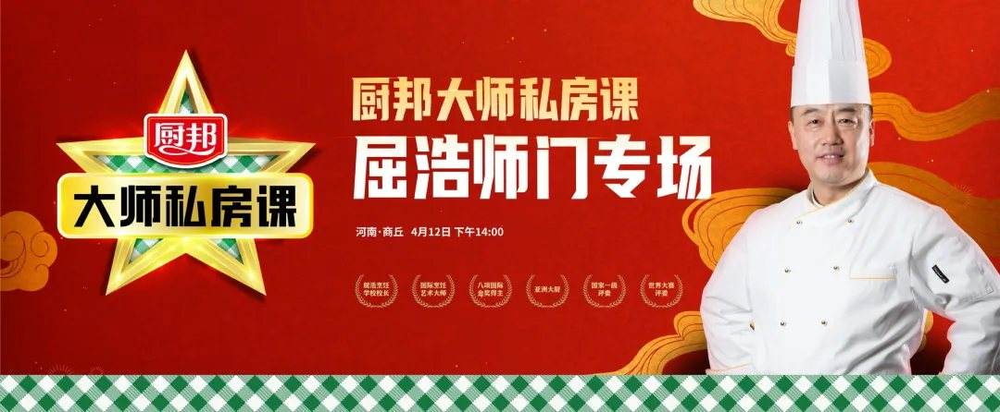
开发厨邦高端酱油，建立高端品牌认知2011 年，厨邦酱油大获成功，产品推出后作为酱油品类业务的第一支金角产品，成功为厨邦建立了“绿格子”“晒足 180 天”等品牌资产认知，为今后厨邦其他产品创造平台与条件。在之后的 12 年中，华与华为厨邦不断根据中国市场酱油行业的发展阶段和趋势，逐步往健康化、功能化开发产品，补充从中低端到高端的全系列产品结构，形成从鲜味酱油、高鲜酱油、减盐酱油、纯酿酱油到零添加酱油完整的产品结构。
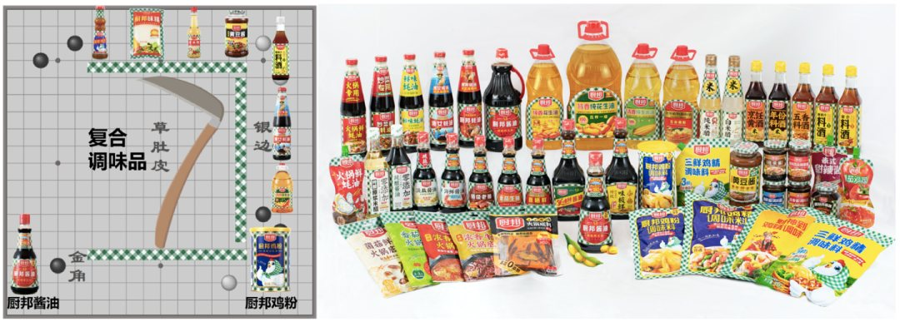
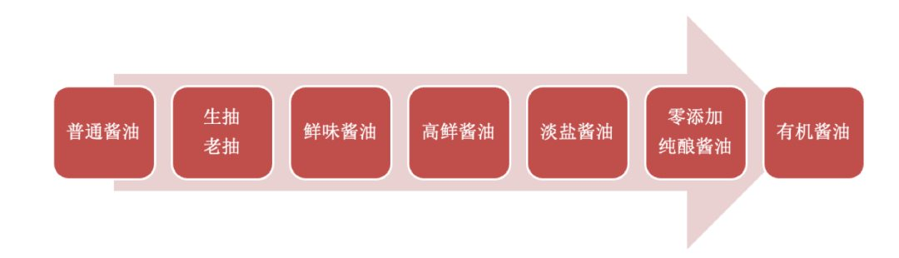
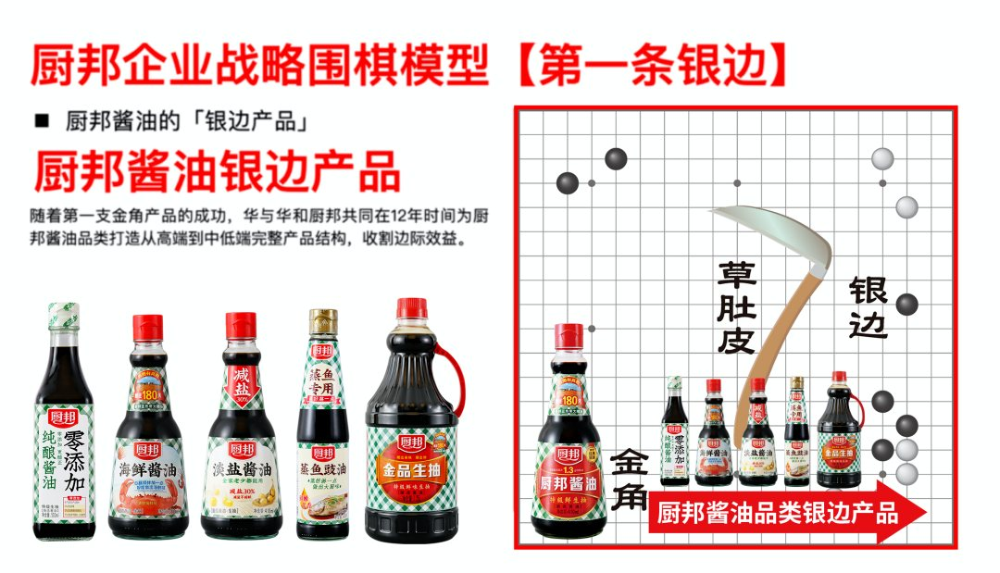
厨邦高端0添加、头道酱油产品开发2019 年，市场竞争逐步推出 0 添加酱油系列抢占市场份额，而厨邦目前在高端 0 添加、头道等概念上还缺乏高端产品。华与华需要为厨邦全新开发高端系列产品，建立高端酱油产品认知，从瓶型设计，产品开发、包装设计，建立独特的购买理由，从市场的中高端高鲜酱油中脱颖而出。1 ）重新打造厨邦高端酱油的价值标杆，强化厨邦在中高领域内的布局占位；2 ）自己把自己卖出去，卖得更多，为厨邦其他高端产品的成功创造条件；3 ）持续积累、增值绿格子的品牌资产。厨邦高端酱油：创意购买理由产品的本质是购买理由，发现一个购买理由就意味着创意了一个新产品，产品开发，就是先提出一个购买理由，然后用一个产品去实现它。产品开发从洞察一个购买理由开始。由此，为厨邦开发两大高端酱油产品。我们把 2 大系列高端酱油，命名为“零添加原汁”、“头一道”。同时用数字符号“ 0 ”和“ 1 ”放大产品购买理由，获取货架陈列优势。头一道酱油：采用头一道榨取的酱油原汁。零添加酱油：只用 6 种原料。释放无添加健康价值。
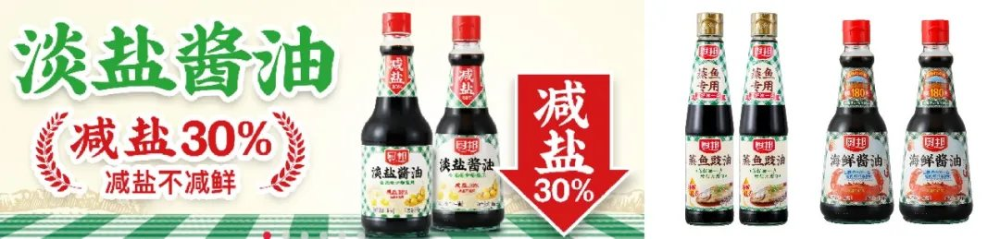
厨邦包装工业设计，设计高端酱油瓶型为了释放高端酱油的产品价值，华与华对产品瓶形进行了工业设计的产品开发，开发了新瓶型：厨邦小蛮腰。
我们为酱油瓶增加腰线，让瓶型更加优雅时尚，灵感来源于广州小蛮腰，增加产品自身的原力。所以我们也为这个瓶子取了个小名，叫厨邦小蛮腰。在腰线设计上，我们通过控制腰线的变化来控制瓶身重心的移动，腰线靠上，重心下移，使整体视觉更加稳定，同时腰线靠上也方便消费者抓握。与产品的高端定位也更加契合。在货架上的瓶体高度相比同样装量的产品，要更加显眼。在瓶盖上，实现凸印上色“ 180 天”。不但在瓶口积累品牌资产，同时这也是在包装生产工艺上的竞争壁垒，让竞争对手难以模仿。华与华为厨邦高端酱油包装设计 5 大体验：1 ）流线小蛮腰，抓握更舒适；2 ）厨邦防盗掀盖，开盖省力零残留；3 ）倒油口菱形尖嘴，精准用量好把控；4 ）刻度条贴心包装，判断余量不慌张；5 ）食品级 pet 材质，便携防摔更安全。

在 2022 年 4 月正式上市。厨邦高端酱油在终端货架上获得极强的陈列优势，让产品放上货架就开卖！
打造鸡粉第二超级品类
2021 年鸡精粉品类产品销售超 6 亿，是继厨邦酱油后的第二大的拳头品类。而厨邦鸡粉的故事要从 2010 年说起。
在厨邦酱油金角产品大获成功后，成功扎根酱油品类，建立厨邦品牌和绿格子的超级符号资产。同时当然也承接起在厨邦调味品行业拳头产品的战略角色，为厨邦今后其他的产品创造平台与条件。在做活第一支金角后，我们要开始拉银边，我们开始开发厨邦第二大品类产品：厨邦鸡粉。用符号的编码和解码为厨邦成功开发鸡粉的产品包装，释放出了品牌边际效益。
当时调味品类货架，味精、鸡精产品远超过鸡粉。而在鸡粉品类中，家乐品牌一枝独秀。在这样的竞争态势下，我们如何化解竞争对手品牌成熟的优势？建立厨邦鸡粉独特的购买理由实现产品更大的销售？在市场调研中我们发现，不管是家乐还是太太乐，都始终以鲜为策略，对“鲜”进行品牌积累，“鲜味科学”、“尝到真正的鲜”“鲜满天下”、“鲜得有一套”。同时“不口干”这一附加诉求作为补充，逐步实现取代味精的战略。如何让厨邦鸡粉的“鲜”脱颖而出？
厨邦土鸡粉：抓住两个“鲜”第一鲜：类别鲜，创建鸡粉新类别，消灭思考。百鸡谁最鲜？土鸡！我们不是鸡粉，是土鸡粉！我们重新命名产品：厨邦土鸡粉。创意话语体系：厨邦土鸡粉，土鸡做的鸡粉；土鸡粉才够鲜美！第二鲜：符号鲜，占据土鸡符号鸡粉包装一定要画只鸡，土鸡粉包装一定要画只土鸡！鸡的特征是头上系一个绿格子头巾，这只土鸡也成为厨邦土鸡系列的注册商标。厨邦土鸡粉产品推出后，没有广告投放的情况下获得了很好的销售成绩，成功拉出了厨邦鸡粉品类的银边。
厨邦鸡粉再开发，创造超级代言人2012 年，客户跟我们说厨邦土鸡粉命名不能使用，需要重新翻新。因为它叫“土鸡粉”，土鸡没有国标、没有企标，如果被查的话，可能会导致一些不好的企业负面和影响，而厨邦又是一个特别谨慎的企业，随后就放弃土鸡粉的创意。在厨邦土鸡粉产品命名不能使用后，我们又对厨邦鸡粉产品进行产品的再开发。当时厨邦鸡粉已有 2 个亿销售基础，那我们如何保持原有成功产品的资产，再去放大新包装的优势呢？在话语上我们仍旧锁定鲜味，提出“原汁原味才是鲜，厨邦鸡粉原味鲜”的产品话语体系，给出“你一闻就知道”的消费者行动指令。其次，我们打造低成本低风险无绯闻的超级代言人——厨邦鸡妈妈。原先，厨邦土鸡粉绿头巾鸡妈妈的形象已经在市场上积累了一定的品牌资产。而这次翻新，我们把厨邦土鸡的形象从二维变成一个三维立体的形象，它就是厨邦鸡粉鸡精品类的超级角色，在我们的产品包装、 TVC 、海报上成为我们的品牌代言人，为厨邦建立了一个全新的品牌资产。2013 年，创意拍摄厨邦鸡粉电视广告；
2015 年，对厨邦鸡粉包装持续改善，提升“鸡妈妈”三维形象的表现力和产品排版，提升产品货架陈列优势。
2018 年，厨邦鸡粉第三次翻新，增加产品包装食欲感。
2016 年，厨邦味精产品翻新。“玉米发酵出的自然鲜味”，放大“ 100 %玉米发酵”的技术价值。2018 年：开发中低端鸡精鸡粉产品，补充产品结构。
2020 年，开发三鲜鸡精、调味粉。（拓展全国鸡精市场，从区域推向全国。）2020 年，厨邦进行全国区域鸡精的拓展。但在非主销区域，以往用中低端产品开拓市场的手段并没有取得非常好的成效。因为中低端产品在和小品牌竞争时，在价格上还没有特别的优势。所以当时厨邦和华与华一同决定开发一款中高端鸡精产品，提升产品价值。产品命名：三鲜鸡精。产品话语，突出产品价值：鸡鲜、香菇鲜、海带鲜，三鲜合一鲜上鲜。同时采用全新旋盖自立袋，随心控量超方便。2021 年三鲜鸡精全面上市。推出后，渠道经销商接受度高，动销快，新品销量远超预期。
建立美味鲜品牌储蓄罐
在和华与华合作的前 10 年，厨邦其实不叫厨邦，一直都是叫“美味鲜”。为什么后来又不叫了？因为当时“美味鲜”品牌无法注册商标，很多公司争相使用。公司申请商标时，又被竞品提出异议，进而陷入了“美味鲜”商标无法自我保护的窘境。所以才注册了厨邦这个品牌，相当于厨邦这个品牌另起炉灶重新开始。到 2011 年的时候，“美味鲜”的商标注册成功，确认美味鲜这个品牌归厨邦所有，其他人的都无效。于是这个时候企业就有两个牌子，一个厨邦，一个美味鲜。这时，厨邦决定把美味鲜这个品牌再用起来，打造一个中低端品牌，和厨邦配合变成一个高低搭配的组合。厨邦打中高端市场，美味鲜做低价市场。为什么美味鲜品牌还可以做？因为美味鲜在华东市场，知名度依然很高，比如在浙江市场就认美味鲜品牌。包括厨邦有一款产品叫厨邦美味鲜酱油，这个产品主销华东市场，即便品牌改了名字叫厨邦，他也要把美味鲜带着，所以我们就重新策划了美味鲜的品牌策略。于是我们打造超级符号：美味鲜大厨大厨，是公认的烹饪专家。我们设计出一个留着白胡子，戴着厨师帽的大厨形象。同时大厨的眼睛在货架终端，能够提升品牌的货架优势，加速和消费者的沟通。创意“特别美味特别鲜，大厨爱用美味鲜”的品牌谚语。
2012 年符号改善，开发头一道生抽。
美味鲜品牌一直销售至今，一直作为边际品牌在销售，并没有非常大的销量，原因有两点：第一，企业的投资资源是有限的。当把所有的精力和资源都放到了厨邦品牌上，要再培养出第二个品牌，其实是非常难的。虽然美味鲜品牌名比厨邦品牌名更好，在后期对于美味鲜品牌没有什么大投放。只是拿美味鲜品牌直接去卖货，包括推广、铺货、促销员的配比都不高，没有投入就很难形成品牌资产的积累。第二，没有把美味鲜的销售体系跟厨邦的销售体系分开。渠道混在一起，渠道经销商就不可能发力去做美味鲜，大家肯定是优先做厨邦，因为厨邦能卖得动，而美味鲜需要培养。一个销售队伍，一个销售团队去操作两个品牌，大家肯定优先操作厨邦，因为操作厨邦能够完成任务，操作美味鲜不能完成任务。所以，企业品牌的成功是营销 4P 的成功。要想建立一个品牌产品、推广、渠道、定价缺一不可。
建立厨邦食品王国：罐头产品开发策略
2012 年，厨邦“绿格子”品牌战略大获成功。于是我们提出，要打造厨邦绿格子军团食品王国，让厨邦从调味品王国向食品领域进军。当时正值厨邦在阳西新建厂，而阳西有丰富的水产资源。所以思考依托阳西原产地的资源优势，想要开发原产地食材产品。而开发蚝罐头，就是厨邦进入食品领域的起手式产品开发。当时厨邦并没有罐头的产品开发经验和设备，一切都是从 0 起步。一次偶然的机会，厨邦张董出国看到国外独特的蚝罐头盒型，他就拿了一罐回来给我们参考，于是我们就开始了罐头的产品开发。
基于南海水产丰富的阳西资源，开发罐头产品当时我们发现厨邦蚝原材料产自阳西，阳西海域属于南海，“南海”是人们最为熟知和便于记忆的超级词语。“南海”一词也容易引起美好的联想，一片美好的蓝色的海域等。于是我们给产品命名：南海蚝。话语体系：南海蚝罐头，精选 9 只优质完整南海蚝，突出产品品质。而在产品包装设计上，符号跟着绿格子统一，跟着厨邦卖。同时独特的南海蚝罐头，打破罐头行业常规包装形态，把产品包装竖起来，扩大正面陈列面，让产品迅速被发现，“站着就把钱挣了”。
经过几年的尝试，最终厨邦罐头产品并没有成功，产品在 2014 年上市，销售了 6 年之后，决定在 2020 年全面退市。
也让我们收获了产品开发的经验：第一，缺乏罐头产品生产优势，产品生产、包装成本过高。第二，罐头品类市场规模小，消费者品牌转换成本高。拿豆豉鲮鱼罐头来举例，当时市面上豆豉鲮鱼都卖得很便宜。厨邦原先没有开发经验，但真正开始研发才发现，严格按照我们的生产工艺流程来制作成本就会非常高。厨邦为了保证食品品质，就找鱼塘定点养殖，按照厨邦的标准要求去养，但也因此我们的产品成本就高到天上去了。当时市场上，罐头价格带基本在 8 ~ 9 元，而厨邦鲮鱼罐头即使定价到 12 ~ 13 元。同时蚝罐头、鲮鱼罐头市场容量不超过 10 亿，我们又要去抢老牌产品市场，所以竞争的难度也大大提高。所以，产品开发的成功，必须对品类的选择和成本运营有充分的认知和把控。
绿格子镰刀开拓食用油品类市场
为渠道开发产品，绿格子镰刀开拓食用油品类市场（2010）
厨邦食用油品类， 2021 年销售超 5 亿。而早在 2010 年，厨邦还没有一款食用油的产品。而这一品类的成功，源自对渠道的认知和品牌符号的使用。2010 年厨邦酱油一炮而红，当时厨邦提出是否依托品牌的知名度，充分利用现有渠道开拓食用油品类，收割边际效应，快速提高销售额。因当时渠道和知名度都具备了一定的规模，厨邦在华南沿海已经是知名品牌，渠道也有一定的积累，而卖酱油也是卖粮油的渠道，基于这样的契机开始做食用油产品向全新品类市场进攻。
但当时食用油品类本身已经被市场巨头牢牢占据，新品牌很难进入。我们如何开发一款食用油产品，能够具有吸引力的购买理由，还能促进经销商渠道的销售？
产品开发就是开发购买理由
当时市场调研，包括金龙鱼在内的大型粮油企业，都是调和油销售为主。调和油通常是以大豆油、花生油为主要油脂，然后加以少量的玉米油、菜籽油、芝麻油、亚麻籽油、橄榄油等调和而成的油。而有些调和油，却是以菜籽油为主，配以一定比例的大豆油、棕榈油等，价格比较低，营养价值也要低很多。为了避开和大型企业的竞争，厨邦需要走中高端高价值差异化的产品开发路线。我们就想着一条产品策略的思路，我们只做高端的、纯正的、不调和的油。因为纯正就是高贵！消费者有选“纯正油”这一常识！而高端的纯正油产品也可以提升产品定价，让经销商有利润的空间。所以我们给厨邦食用油产品命名为： 100 %纯花生油。提出：“纯的，不是调和的”话语体系，获得对“ 100 %纯花生油”类别的解释权。最关键的是用绿格子把我们的食用油给包上，利用在厨邦酱油上积累的品牌资产，让这个在食用油市场的新产品一夜之间成为消费者熟知的品牌。同时也邀请李立群为我们拍摄了产品广告片。在 100 %纯花生油推出的第二年，销售额直接过亿，为厨邦开拓食用油品类市场迈出成功的一步。
2012 年 100 %纯花生油海报升级。
2012 年 100 %纯花生油产品翻新提升花生食欲，侧面增加“有图有真相”食材背书及话语体系。
规划产品结构，完善产品体系（2012~2016年）
在 100 %纯花生油产品销量逐步扩大后，单一的产品已经不能满足经销商的需求了。这就需要规划产品的结构和发展路线图，设计好渠道的利润体系，完整产品梯队。在2012 年~ 2020 年的 8 年中，华与华和厨邦共同规划设计，开发出从中低端到高端食用油产品 5 大系列。2011 年，开发厨邦 100 %纯玉米油，进军全国市场。
2012 年，开发厨邦 100 %纯芝麻油，增加新品类，切入区域细分市场。货卖一张图：包装没有普通芝麻油和芝麻的符号，而是使用“芝麻开花节节高”的符号来设计包装，提升产品价值。
2014 年，开发中低端调，厨邦五谷调和油，从南到北进军全国中低端粮油市场。在调和油品类创意独特购买理由：五谷调和油
话语体系：五谷互补合理调和（花生+玉米+白芝麻+葵花籽+大豆）。标出每种油类配比，呈现产品证据。
2017 年，包装改善：非转基因五谷调和油、芝麻调和油。厨邦非转基因五谷调和油包装改善：增加产品食欲感，五谷产品图片放大。
厨邦浓香芝麻调和油包装改善：
再造两大过亿品类
构建厨邦绿格子食品王国酱料产品再开发，真材实料做好酱（2013~2016年）2013 年开发厨邦佐餐酱系列，收割银边边际效益。用绿格子统一酱料类产品，放上货架就开卖。
厨邦黄豆酱产品开发（ 2015 ~ 2019 年）2015 年，华与华为厨邦开发黄豆酱产品。厨邦黄豆酱因采用优质东北非转基因大豆，通过晒制天然发酵而成。所以命名为：原晒香黄豆酱。提出：“一勺搞定一个菜”的话语体系，以及“拌蘸卤炒原晒香”的产品使用指南。
像卖果汁一样卖番茄酱（ 2016 年）2016 年，番茄沙司在酱类里面自然销量增长明显。因此我们就对产品包装进行翻新和二次开发。番茄沙司的翻新要像卖果汁一样卖番茄酱，突出产品食欲感，释放产品价值。
1 ）提出购买理由“这瓶用掉 60 个熟红小番茄”，释放料多实在的产品价值。2 ）货卖一张图，增加产品食欲感。3 ）利用颈部标，放上“有图有真相”图标，持续积累厨邦的品牌资产
占领米字标，建立“米”醋家族(2019年)2019 年，我们对醋类产品进行翻新升级。我们发现在中国市场，消费者对醋有了更高的要求，而健康化和功能化是食醋产品品类的升级方向。
对此，我们要建立厨邦食醋的独特品类价值。谷物醋的原料又以“米”为主，传统 4 大类型“白醋、米醋、香醋、陈醋”的原料都离不开“米”。“米”醋是一个完全可以做大的概念，占领食醋原料“米”的认知是我们的机会点。从而构建厨邦食醋的整体品类价值，积累品牌资产。用“米”统一厨邦食醋的的品类价值，建立厨邦“米”醋家族。米字标，突出放大每个醋的酸度，提供购买理由和购买指南，降低消费者选择成本。
金奖购买理由，进入复调市场
2021 年复合调味品市场快速增长，市场规模预计 1660 亿元，维持 15 %左右高速增速。其中中式复合调味料、火锅底料增速最快。整体市场形成一超多强的竞争格局，餐饮企业、传统复合调味企业、调味品公司三分天下。厨邦要开拓复合调味料市场，开发复合调味产品，切入这个快速增长且竞争激烈的复合调味料市场，占有一席之地。但我们在调研中发现，复合调味料企业，要不是传统的复调企业，要不是像海底捞这样原先就有火锅资源禀赋的企业。而厨邦作为广东传统调味品公司，没有复合调味料的基因和消费者认知，如何切入这个以川调为主的品类市场，让消费者能选择我们呢？
打响厨邦品牌，实现终端动销
厨邦作为渠道型品牌，需要让经销商建立信心并帮助品牌卖货。进入复合调味料市场时，先集中资源推出小龙虾调料，再逐步开发火锅底料和其他产品。
产品开发就是开发购买理由
华与华为厨邦小龙虾调料创意“金奖小龙虾调料”。“金奖”具有强烈的信号能量，为产品提供权威与美味的购买理由。
那金奖如何来实现呢？依托顶级厨师俱乐部，举办厨邦全国小龙虾大赛。厨邦因为开设顶级厨师俱乐部和凉菜大赛，聚集非常多的厨师资源和赛事举办经验。而要实现“金奖”购买理由，我们正可以发动厨邦厨师的资源禀赋，联合中国烹饪协会举办全国小龙虾大奖赛。每个口味一个金奖，金奖获得者，联合大师进行厨邦小龙虾调料的研发。不但可以为产品提供购买理由和背书，还能卷入厨邦的 to b 业务市场。在 2021 年提案过后，厨邦立马进行产品的研发和赛事举办工作，于当年 9 月 24 日- 9 月25 日，联合中国烹饪协会开展“ 2021 年全国小龙虾烹饪大赛”和“ 2021 年全国火锅锅底烹饪大赛”。
2022 年 3 月 1 日，厨邦金奖小龙虾调料正式推出。
建立流量主权，构建品牌流量结构
品牌必须建立自己的流量主权，自己的流量结构。这一结构，必须是时间上、空间上、文化上、物质上的多层级复合结构华与华在制定厨邦产品结构，设计产品开发的过程中，不断经营品牌流量主权，形成流量大开发、大生长，大循环。这一复合流量结构包括：1 ）母体语词流量；2 ）产品流量；3 ）产品结构流量；4 ）元媒体流量；5 ）广告流量。母体语词流量，就是对语词的流量保持高度敏感，从“厨邦酱油美味鲜，晒足 180 天”、“有图有真相”“老传统都很笨，就靠太阳晒”再到“厨邦讲良心 产品更放心”，只使用流量最大的语词，也就是有最大文化契约的语词。关键是企业、品牌的文风，要保持母体语词的文风，才能获得文化流量。产品和元媒体流量，就是产品和元媒体本身应该自带流量，就是顾客奔着产品来的。厨邦三鲜鸡精，葱姜汁料酒，渔女蚝油就是我们培育的能带来顾客流量的产品和元媒体的开发，这就带来了流量。产品结构流量呢，就是产品和产品之间互为流量入口，每一个产品都能促进其他产品的销售。比如厨邦酱油开拓北方市场，就开发“原晒鲜”酱油、黄豆酱采用相同工艺，命名“原晒香黄豆酱”所有相关的产品都聚焦投资在同一个资产上。而厨邦纯酿酱油、纯酿米醋再到 100 %纯花生油，虽然是不同品类，又共同投资厨邦在“纯”上的母体词语、这就是一个流量结构，而且是一个复合流量结构，形成互动循环。
广告流量，关键是累积效应、雪球效应，靠长期的积累。长期积累，则事半功倍；狂轰滥炸，则可能崩盘。广告投资，是建立品牌，让品牌流量成本持续走低。
厨邦通过从 2010 年至今持续 12 年不间断、不挪窝的广告投放，累积投入不到海天的十分之一，但是积累了巨大的品牌效应。如果把 1 . 5 亿集中到一年内投入，即便是放到2010 年，也是过眼烟云，什么也不会留下
建设品牌道场，宣传酱油文化
华与华首个博览馆规划设计项目，品牌道场——厨邦酱油文化博览馆。2011 年，在厨邦董事长的主持下，厨邦酱油文化博览馆正式立项。厨邦酱油文化博览馆是华与华全程参与策划设计的博览馆项目。整个项目历经三年， 2011 年到 2013 年两年策划， 2014 年建成，并于当年 11 月 7 日举行了开馆仪式。而整个项目的起因源自 2011 年，厨邦在日本进行企业走访时看到日本的调味品企业在工厂都会建有自己的品牌博览馆，既是一个旅游目的地，又是一个企业文化宣传的道场。当时正值厨邦新建厂房和大楼，就和我们提出，能不能给厨邦也做一个这样的博览馆，于是我们做了厨邦博览馆全程的策划和设计。在华与华做所有课题都有一条准绳：始终服务于最终目的，永远回到原点思考。策划博览馆项目也是如此，首先我们要明确厨邦酱油博览馆的社会使命及对品牌的目的。公关及公益战略：企业实现社会公民，推动行业和社会进步。华与华是把企业社会责任、公关和公益都纳入品牌管理，并视之为企业战略的上层建筑。围绕华与华价值之轮模型帮助企业实现社会公民的价值，对企业而言，不仅拥有顾客黏性，更有社会黏性，更加根深叶茂，基业长青。从经营的伦理而言，更是实现企业的最终目的：推动社会进步和人的成长。企业的生意就是一方人民的生计，文化需要传承，寻找母体、强化母体、成为母体。为恢复和弘扬地方传统文化做贡献。
厨邦酱油文化博览馆，对厨邦品牌及厨邦公司的价值和意义1 ）厨邦酱油文化博览馆是厨邦品牌公关产品
关于调味品和酱油的一切百科知识都在这里，是树立厨邦品牌在酱油这个品类，甚至是调味食品领域权威专家形象的一个公关产品。2 ）厨邦酱油文化博览馆是厨邦的品牌道场厨邦酱油文化博览馆，是公众认知厨邦品牌最好的窗口，在这里可以最全面、最深入地了解厨邦品牌的一切信息，可以接待政府机关的访问考察、可以向大众充分展示厨邦品牌的形象和内涵。3 ）厨邦酱油文化博览馆是厨邦公司文化及价值观的最佳体现空间每一个厨邦的老员工、新员工都应该熟悉我们所从事的事业，应该熟悉我们的品牌、我们的历史。让每一个员工感受到厨邦的企业文化和价值观，深刻认知和感受厨邦企业使命。新员工入职后可以在博览馆当几天义务讲解员。4 ）厨邦酱油文化博览馆是厨邦公司的一个档案馆厨邦酱油文化博览馆是记载厨邦发展史的一个载体，我们不断地深入研究，挖掘调味品的历史和文化，不断探索新的技术，创造新的产品，厨邦酱油文化博览馆将见证和记录厨邦的历史进程。
我们希望参观者参观完之后记住什么？带走什么信息和记忆？我们就是要让参观者形成：厨邦是酱油领域积淀最深，研究最全的品牌。确立酱油品类权威专家的认知。能够再参观完，记住 4 大要点：1 ）南派酱油是更好的酱油；2 ）厨邦酱油美味鲜，晒足 180 天，厨邦江边的大晒厂；3 ）厨邦绿格子超级符号；4 ）世界最大的酱油瓶。
设计参观者的参观路线和品牌体验博览馆大门外，绿格子将游客的视线锁定在 7 . 8 米高的天下第一大酱油瓶上。厨邦酱油文化博览馆大门，绿格子包着天下第一酱油瓶。
博览馆内，厨邦坚持了百年的传统酱油工艺面纱一幕幕揭开，当导游述说酱油文化时，游客会发现原来老传统真的这么笨，厨邦坚持了 100 年，这么有良心，这么鲜。博览馆共四层：第一层用前店后坊的形式，展现古代酱园的生活、工作场景。第二层为导览区体验中心，以黄豆为主题，用多媒体地幕模拟豆子满地的场景，并设“踩豆子”情景，增强趣味性。第三层为厨邦酱油博览馆的主展区，利用古代画卷的卷轴形式，向游客娓娓道来酱油的发展历史。第四层为厨邦酱油生产流水线，可以现场观看到厨邦沿江大晒场及酱油入瓶包装的过程。
经过多年经营，厨邦酱油文化博览馆是中国饮食和调味品历史和文化传承的一个载体，可以为整个社会保存和传承一份调味品的历史和文化，是对人类文明的传承和贡献。· 2015 年国际生态设计奖·最佳生态地域文化博览馆设计提名奖；· 2015 年，首批“中山市食品药品安全科普教育基地”[ 5 ]；· 2016 年，成为“中山市青少年实践教育基地”；· 2020 年，荣获“中山市文明旅游景区”“广东省工业旅游精品线路”；· 2020 年，成为“广东省中小学生研学实践教育基地”。
厨邦酱油文化博览馆成为中山这座城市的一部分，是中山市城市发展历史的一个组成部分，是中山市的一张新名片，是中山市的一个新的旅游景点，也成为学生素质教育基地、科普教育基地。厨邦酱油文化博览馆是社会大众了解酱油及其历史的一个最佳场所，为大众提供知识服务。
厨邦与华与华合作10周年庆典
2020 年是厨邦酱油与华与华日日不断合作 10 周年。仪式即文明，记忆是最有价值的资产，共同的记忆是最紧密的纽带！在 9 月 27 日，厨邦和华与华共同举办“厨邦&华与华合作十周年庆典”。这样一方面即是激励项目团队，十

周年庆典是比夺得百万大奖赛更大的荣耀。另一方面，是对不离不弃宽容我们的客户，表达最高的感恩！李翠旭总经理发表了热情洋溢的讲话，对华与华过去十年的工作给予了充分的肯定，也对下一个十年提出了新的要求。华与华董事长华杉也汇报了华与华方法的最新进展。项目团队提报下一个十年战略提案。
坚守12年，厨邦品牌资产一以贯之
华与华方法，用超级创意撬动企业战略，一战而定，建立厨邦品牌资产。
而“绿格子”形象为厨邦奠定了决定性的竞争优势，并成为每天增值的品牌资产。“晒足180 天”的厨邦标准，成为行业典范和同行膜拜模仿对象。“厨邦讲良心”成为企业经营哲学，为厨邦产品开发坚定了方向。12 年提供持续服务的价值：从产品开发创意、包装设计、广告与推广创意，到企业战略、品牌战略、品牌资产管理。 12 年坚守的价值就是因为华与华在，厨邦能够一以贯之，这 12 年没有改广告语，也没有改绿格子。把品牌资产能够延续下来，它就有了积累的力量 12 年持续改善的价值。华与华从第一年开始就是在持续改善，一直改到今天。从产品包装、到品牌物料、从电视广告到渠道运营。华与华把持续改善的价值深入到厨邦的管理运营中去。2022 年是华与华为厨邦持续服务的第 13 个年头，这是华与华的福气。华与华与厨邦的12 年，是华与华方法帮助一个地方酱油品牌成长为调味品行业领军企业的一次成功实践。12 年持续服务，持续改善从超级符号、产品开发、品牌战略，坚守厨邦品牌资产，不断积累厨邦品牌资产，打造成如今超 50 亿的厨邦绿格子食品王国。未来也将继续帮助企业，开启第三个五年计划新征程!